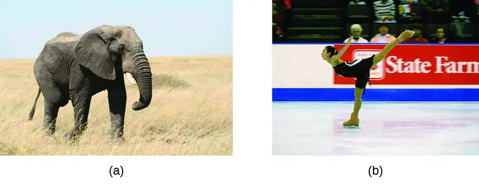
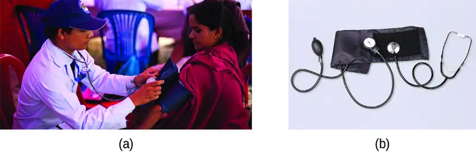
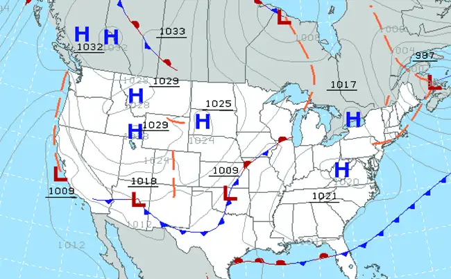
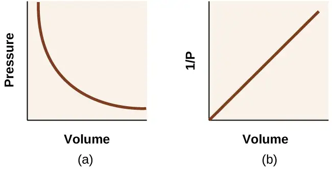
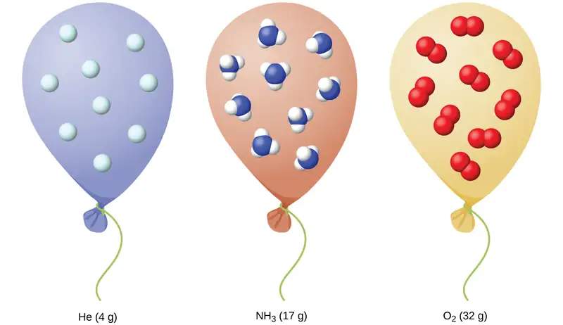
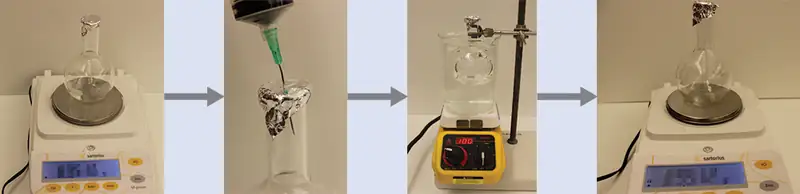
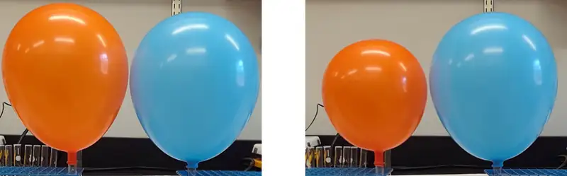

Chapter 9: Gases¶
Introduction¶
Learning Objectives
- Gas Pressure
- Relating Pressure, Volume, Amount, and Temperature: The Ideal Gas Law
- Stoichiometry of Gaseous Substances, Mixtures, and Reactions
- Effusion and Diffusion of Gases
- The Kinetic-Molecular Theory
- Non-Ideal Gas Behavior
We are surrounded by an ocean of gas—the atmosphere—and many of the properties of gases are familiar to us from our daily activities. Heated gases expand, which can make a hot air balloon rise (Figure 9.1) or cause a blowout in a bicycle tire left in the sun on a hot day.
Gases have played an important part in the development of chemistry. In the seventeenth and eighteenth centuries, many scientists investigated gas behavior, providing the first mathematical descriptions of the behavior of matter.
In this chapter, we will examine the relationships between gas temperature, pressure, amount, and volume. We will study a simple theoretical model and use it to analyze the experimental behavior of gases. The results of these analyses will show us the limitations of the theory and how to improve on it.
9.1 Gas Pressure¶
Learning Objectives
By the end of this section, you will be able to:
- Define the property of pressure
- Define and convert among the units of pressure measurements
- Describe the operation of common tools for measuring gas pressure
- Calculate pressure from manometer data
The earth’s atmosphere exerts a pressure, as does any other gas. Although we do not normally notice atmospheric pressure, we are sensitive to pressure changes—for example, when your ears “pop” during take-off and landing while flying, or when you dive underwater. Gas pressure is caused by the force exerted by gas molecules colliding with the surfaces of objects (Figure 9.2). Although the force of each collision is very small, any surface of appreciable area experiences a large number of collisions in a short time, which can result in a high pressure. In fact, normal air pressure is strong enough to crush a metal container when not balanced by equal pressure from inside the container.
![The left side of this figure includes a graphic of the earth with an inverted rectangular prism extending from a point on it. Near the top of the image, the label, “square inch column of air molecules” is connected to the prism with a line segment. This label is also connected with a line segment to a downward pointing arrow at the right side of the figure. Beneath the arrow is a red circle labeled, “atmospheric pressure.” A narrow rectangle with a dashed line border extends from the bottom of the arrow vertically through the circle. Directly beneath this rectangle at the lower edge of the circle is a hand with a thumb appearing to be resting on a tabletop. The thumb is connected with a line segment to the label, “14.7 lbs of pressure on 1 square inch.” The red circle is sitting on top of the thumb.](img/cnx-chem-09-01-pressure1.webp)
Link to Learning
A dramatic illustration of atmospheric pressure is provided in this brief video, which shows a railway tanker car imploding when its internal pressure is decreased.
A smaller scale demonstration of this phenomenon is briefly explained.
Atmospheric pressure is caused by the weight of the column of air molecules in the atmosphere above an object, such as the tanker car. At sea level, this pressure is roughly the same as that exerted by a full-grown African elephant standing on a doormat, or a typical bowling ball resting on your thumbnail. These may seem like huge amounts, and they are, but life on earth has evolved under such atmospheric pressure. If you actually perch a bowling ball on your thumbnail, the pressure experienced is twice the usual pressure, and the sensation is unpleasant.
In general, pressure is defined as the force exerted on a given area: \(P=\:\frac{F}{A}.\) Note that pressure is directly proportional to force and inversely proportional to area. Thus, pressure can be increased either by increasing the amount of force or by decreasing the area over which it is applied; pressure can be decreased by decreasing the force or increasing the area.
Let’s apply this concept to determine which exerts a greater pressure in Figure 9.3—the elephant or the figure skater? A large African elephant can weigh 7 tons, supported on four feet, each with a diameter of about 1.5 ft (footprint area of 250 in2), so the pressure exerted by each foot is about 14 lb/in2:
The figure skater weighs about 120 lbs, supported on two skate blades, each with an area of about 2 in2, so the pressure exerted by each blade is about 30 lb/in2:
Even though the elephant is more than one hundred-times heavier than the skater, it exerts less than one-half of the pressure. On the other hand, if the skater removes their skates and stands with bare feet (or regular footwear) on the ice, the larger area over which their weight is applied greatly reduces the pressure exerted:

The SI unit of pressure is the pascal (Pa), with 1 Pa = 1 N/m2, where N is the newton, a unit of force defined as 1 kg m/s2. One pascal is a small pressure; in many cases, it is more convenient to use units of kilopascal (1 kPa = 1000 Pa) or bar (1 bar = 100,000 Pa). In the United States, pressure is often measured in pounds of force on an area of one square inch—pounds per square inch (psi)—for example, in car tires. Pressure can also be measured using the unit atmosphere (atm), which originally represented the average sea level air pressure at the approximate latitude of Paris (45°). Table 9.1 provides some information on these and a few other common units for pressure measurements
Table 9.1
| Pressure Units | |
|---|---|
| Unit Name and Abbreviation | Definition or Relation to Other Unit |
| pascal (Pa) | 1 Pa = 1 N/m2 recommended IUPAC unit |
| kilopascal (kPa) | 1 kPa = 1000 Pa |
| pounds per square inch (psi) | air pressure at sea level is ~14.7 psi |
| atmosphere (atm) | 1 atm = 101,325 Pa = 760 torr air pressure at sea level is ~1 atm |
| bar (bar, or b) | 1 bar = 100,000 Pa (exactly) commonly used in meteorology |
| millibar (mbar, or mb) | 1000 mbar = 1 bar |
| inches of mercury (in. Hg) | 1 in. Hg = 3386 Pa used by aviation industry, also some weather reports |
| torr | \(\text{1 torr}=\:\frac{1}{760}\:\text{atm}\) named after Evangelista Torricelli, inventor of the barometer |
| millimeters of mercury (mm Hg) | 1 mm Hg ~1 torr |
Example 9.1 Conversion of Pressure Units
The United States National Weather Service reports pressure in both inches of Hg and millibars. Convert a pressure of 29.2 in. Hg into:
(a) torr
(b) atm
(c) kPa
(d) mbar
Solution
This is a unit conversion problem. The relationships between the various pressure units are given in Table 9.1.
(a) \(29.2\:\cancel{\text{in Hg}}\:\times\:\frac{25.4\cancel{\text{mm}}}{1\:\cancel{\text{in}}}\:\:\times\:\frac{\text{1 torr}}{1\:\cancel{\text{mm Hg}}}\:=\text{742 torr}\)
(b) \(742\:\cancel{\text{torr}}\:\times\:\frac{\text{1 atm}}{760\:\cancel{\text{torr}}}\:=\text{0.976 atm}\)
(c) \(742\:\cancel{\text{torr}}\:\times\:\frac{\text{101.325 kPa}}{760\:\cancel{\text{torr}}}\:=\text{98.9 kPa}\)
(d) \(98.9\:\cancel{\text{kPa}}\:\times\:\frac{1000\:\cancel{\text{Pa}}}{1\:\cancel{\text{kPa}}}\;\times\;\frac{1\:\cancel{\text{bar}}}{100,000\:\cancel{\text{Pa}}}\;\times\;\frac{\text{1000 mbar}}{1\:\cancel{\text{bar}}}\:=\text{989 mbar}\)
Check Your Learning
A typical barometric pressure in Kansas City is 740 torr. What is this pressure in atmospheres, in millimeters of mercury, in kilopascals, and in bar?
Answer:
0.974 atm; 740 mm Hg; 98.7 kPa; 0.987 bar
We can measure atmospheric pressure, the force exerted by the atmosphere on the earth’s surface, with a barometer (Figure 9.4). A barometer is a glass tube that is closed at one end, filled with a nonvolatile liquid such as mercury, and then inverted and immersed in a container of that liquid. The atmosphere exerts pressure on the liquid outside the tube, the column of liquid exerts pressure inside the tube, and the pressure at the liquid surface is the same inside and outside the tube. The height of the liquid in the tube is therefore proportional to the pressure exerted by the atmosphere.
![This figure shows two barometers. The barometer to the left contains a shallow reservoir, or open container, of mercury. A narrow tube extends upward from the reservoir above the reservoir. This tube is sealed at the top. To the right, a second similar setup is shown with a reservoir filled with water. Line segments connect the label “vacuum” to the tops of the two narrow tubes. The tube on the left shows the mercury in the reservoir extending in a column upward in the narrow tube. Similarly, the tube on the right shows the water in the reservoir extending upward into the related narrow tube. Double-headed arrows extend from the surface of each liquid in the reservoir to the top of the liquid in each tube. A narrow column or bar extends from the surface of the reservoir to the same height. This bar is labeled “atmospheric pressure.” The level of the water in its tube is significantly higher than the level of mercury in its tube.](img/cnx-chem-09-01-barometer.webp)
If the liquid is water, normal atmospheric pressure will support a column of water over 10 meters high, which is rather inconvenient for making (and reading) a barometer. Because mercury (Hg) is about 13.6-times denser than water, a mercury barometer only needs to be \(\frac{1}{13.6}\) as tall as a water barometer—a more suitable size. Standard atmospheric pressure of 1 atm at sea level (101,325 Pa) corresponds to a column of mercury that is about 760 mm (29.92 in.) high. The torr was originally intended to be a unit equal to one millimeter of mercury, but it no longer corresponds exactly. The pressure exerted by a fluid due to gravity is known as hydrostatic pressure, p:
where h is the height of the fluid, ρ (lowercase Greek letter rho) is the density of the fluid, and g is acceleration due to gravity.
Example 9.2 Calculation of Barometric Pressure
Show the calculation supporting the claim that atmospheric pressure near sea level corresponds to the pressure exerted by a column of mercury that is about 760 mm high. The density of mercury = 13.6 g/cm3.
Solution
The hydrostatic pressure is given by p = hρg, with h = 760 mm, ρ = 13.6 g/cm3, and g = 9.81 m/s2. Plugging these values into the equation and doing the necessary unit conversions will give us the value we seek. (Note: We are expecting to find a pressure of ~101,325 Pa.)
Check Your Learning
Calculate the height of a column of water at 25 °C that corresponds to normal atmospheric pressure. The density of water at this temperature is 1.0 g/cm3.
Answer:
10.3 m
A manometer is a device similar to a barometer that can be used to measure the pressure of a gas trapped in a container. A closed-end manometer is a U-shaped tube with one closed arm, one arm that connects to the gas to be measured, and a nonvolatile liquid (usually mercury) in between. As with a barometer, the distance between the liquid levels in the two arms of the tube (h in the diagram) is proportional to the pressure of the gas in the container. An open-end manometer (Figure 9.5) is the same as a closed-end manometer, but one of its arms is open to the atmosphere. In this case, the distance between the liquid levels corresponds to the difference in pressure between the gas in the container and the atmosphere.
![Three diagrams of manometers are shown. Each manometer consists of a spherical pink container filled with gas on the left that is connected to a U-shaped, sealed tube by a valve on its right. The top of the U aligns with the gas-filled sphere and the U, which extends below, contains mercury. The first manometer has a sealed tube. The sealed end to the upper right in the diagram is labeled “closed end” and “vacuum.” The mercury level is higher in the right side of the tube than in the left. The difference in height is labeled “h.” Beneath this manometer illustration appears the label P subscript gas equal sign h rho g. The second manometer has an open-ended tube, which is labeled “open end.” At this opening in the upper right of the diagram is the label P subscript atm. The mercury level is higher in the left side of the tube than in the right. This difference in height is labeled “h.” Beneath this manometer illustration appears the label P subscript gas equal sign P subscript atm minus sign h rho g. The third manometer has an open-ended tube and is similar to the second manometer except that the mercury level is higher in the right side of the tube than in the left. This difference in height is labeled “h.” Beneath this manometer illustration appears the label P subscript gas equal sign P subscript a t m plus h rho g.](img/cnx-chem-09-01-manometer.webp)
Example 9.3 Calculation of Pressure Using a Closed-End Manometer
The pressure of a sample of gas is measured with a closed-end manometer, as shown to the right. The liquid in the manometer is mercury. Determine the pressure of the gas in:
(a) torr
(b) Pa
(c) bar
![A diagram of a closed-end manometer is shown. To the upper left is a spherical container labeled, “gas.” This container is connected by a valve to a U-shaped tube which is labeled “closed end” at the upper right end. The container and a portion of tube that follows are shaded pink. The lower portion of the U-shaped tube is shaded grey with the height of the gray region being greater on the right side than on the left. The difference in height between the left side and right side is 26.4 c m which is indicated with horizontal line segments and arrows.](img/cnx-chem-09-01-manometer1-img.webp)
Solution
The pressure of the gas is equal to a column of mercury of height 26.4 cm. (The pressure at the bottom horizontal line is equal on both sides of the tube. The pressure on the left is due to the gas and the pressure on the right is due to 26.4 cm Hg, or mercury.) We could use the equation p = hρg as in Example 9.2, but it is simpler to just convert between units using Table 9.1.
(a) \(26.4\:\cancel{\text{cm Hg}}\:\times\:\frac{10\:\cancel{\text{mm Hg}}}{1\:\cancel{\text{cm Hg}}}\;\times\;\frac{\text{1 torr}}{1\:\cancel{\text{mm Hg}}}\:=\text{264 torr}\)
(b) \(264\:\cancel{\text{torr}}\:\times\:\frac{1\:\cancel{\text{atm}}}{760\:\cancel{\text{torr}}}\;\times\;\frac{\text{101,325 Pa}}{1\:\cancel{\text{atm}}}\:=\text{35,200 Pa}\)
(c) \(35{,}200\:\cancel{\text{Pa}}\:\times\:\frac{\text{1 bar}}{100,000\:\cancel{\text{Pa}}}\:=\text{0.352 bar}\)
Check Your Learning
The pressure of a sample of gas is measured with a closed-end manometer. The liquid in the manometer is mercury. Determine the pressure of the gas in:
(a) torr
(b) Pa
(c) bar
![A diagram of a closed-end manometer is shown. To the upper left is a spherical container labeled, “gas.” This container is connected by a valve to a U-shaped tube which is labeled “closed end” at the upper right end. The container and a portion of tube that follows are shaded pink. The lower portion of the U-shaped tube is shaded grey with the height of the gray region being greater on the right side than on the left. The difference in height of 6.0 i n is indicated with horizontal line segments and arrows.](img/cnx-chem-09-01-manometer2-img.webp)
Answer:
(a) ~150 torr; (b) ~20,000 Pa; (c) ~0.20 bar
Example 9.4 Calculation of Pressure Using an Open-End Manometer
The pressure of a sample of gas is measured at sea level with an open-end Hg (mercury) manometer, as shown to the right. Determine the pressure of the gas in:
(a) mm Hg
(b) atm
(c) kPa
![A diagram of an opne-end manometer is shown. To the upper left is a spherical container labeled, “gas.” This container is connected by a valve to a U-shaped tube which is labeled “open end” at the upper right end. The container and a portion of tube that follows are shaded pink. The lower portion of the U-shaped tube is shaded grey with the height of the gray region being greater on the right side than on the left. The difference in height of 13.7 c m is indicated with horizontal line segments and arrows.](img/cnx-chem-09-01-manometer3-img.webp)
Solution
The pressure of the gas equals the hydrostatic pressure due to a column of mercury of height 13.7 cm plus the pressure of the atmosphere at sea level. (The pressure at the bottom horizontal line is equal on both sides of the tube. The pressure on the left is due to the gas and the pressure on the right is due to 13.7 cm of Hg plus atmospheric pressure.)
(a) In mm Hg, this is: 137 mm Hg + 760 mm Hg = 897 mm Hg
(b) \(897\:\cancel{\text{mm Hg}}\:\times\:\frac{\text{1 atm}}{760\:\cancel{\text{mm Hg}}}\:=\text{1.18 atm}\)
(c) \(1.18\:\cancel{\text{atm}}\:\times\:\frac{\text{101.325 kPa}}{1\:\cancel{\text{atm}}}\:=1.20\:\times\:{10}^{2}\:\text{kPa}\)
Check Your Learning
The pressure of a sample of gas is measured at sea level with an open-end Hg manometer, as shown to the right. Determine the pressure of the gas in:
(a) mm Hg
(b) atm
(c) kPa
![A diagram of an open-end manometer is shown. To the upper left is a spherical container labeled, “gas.” This container is connected by a valve to a U-shaped tube which is labeled “open end” at the upper right end. The container and a portion of tube that follows are shaded pink. The lower portion of the U-shaped tube is shaded grey with the height of the gray region being greater on the left side than on the right. The difference in height of 4.63 i n is indicated with horizontal line segments and arrows.](img/cnx-chem-09-01-manometer4-img.webp)
Answer:
(a) 642 mm Hg; (b) 0.845 atm; (c) 85.6 kPa
Chemistry in Everyday Life: Measuring Blood Pressure
Blood pressure is measured using a device called a sphygmomanometer (Greek sphygmos = “pulse”). It consists of an inflatable cuff to restrict blood flow, a manometer to measure the pressure, and a method of determining when blood flow begins and when it becomes impeded (Figure 9.6). Since its invention in 1881, it has been an essential medical device. There are many types of sphygmomanometers: manual ones that require a stethoscope and are used by medical professionals; mercury ones, used when the most accuracy is required; less accurate mechanical ones; and digital ones that can be used with little training but that have limitations. When using a sphygmomanometer, the cuff is placed around the upper arm and inflated until blood flow is completely blocked, then slowly released. As the heart beats, blood forced through the arteries causes a rise in pressure. This rise in pressure at which blood flow begins is the systolic pressure—the peak pressure in the cardiac cycle. When the cuff’s pressure equals the arterial systolic pressure, blood flows past the cuff, creating audible sounds that can be heard using a stethoscope. This is followed by a decrease in pressure as the heart’s ventricles prepare for another beat. As cuff pressure continues to decrease, eventually sound is no longer heard; this is the diastolic pressure—the lowest pressure (resting phase) in the cardiac cycle. Blood pressure units from a sphygmomanometer are in terms of millimeters of mercury (mm Hg).

How Sciences Interconnect: Meteorology, Climatology, and Atmospheric Science
Throughout the ages, people have observed clouds, winds, and precipitation, trying to discern patterns and make predictions: when it is best to plant and harvest; whether it is safe to set out on a sea voyage; and much more. We now face complex weather and atmosphere-related challenges that will have a major impact on our civilization and the ecosystem. Several different scientific disciplines use chemical principles to help us better understand weather, the atmosphere, and climate. These are meteorology, climatology, and atmospheric science. Meteorology is the study of the atmosphere, atmospheric phenomena, and atmospheric effects on earth’s weather. Meteorologists seek to understand and predict the weather in the short term, which can save lives and benefit the economy. Weather forecasts (Figure 9.7) are the result of thousands of measurements of air pressure, temperature, and the like, which are compiled, modeled, and analyzed in weather centers worldwide.

In terms of weather, low-pressure systems occur when the earth’s surface atmospheric pressure is lower than the surrounding environment: Moist air rises and condenses, producing clouds. Movement of moisture and air within various weather fronts instigates most weather events.
The atmosphere is the gaseous layer that surrounds a planet. Earth’s atmosphere, which is roughly 100–125 km thick, consists of roughly 78.1% nitrogen and 21.0% oxygen, and can be subdivided further into the regions shown in Figure 9.8: the exosphere (furthest from earth, > 700 km above sea level), the thermosphere (80–700 km), the mesosphere (50–80 km), the stratosphere (second lowest level of our atmosphere, 12–50 km above sea level), and the troposphere (up to 12 km above sea level, roughly 80% of the earth’s atmosphere by mass and the layer where most weather events originate). As you go higher in the troposphere, air density and temperature both decrease.
![This diagram shows half of a two dimensional view of the earth in blue and green. A narrow white layer, labeled “troposphere 0 dash 12 k m” covers this hemisphere. This layer is also labeled “layer where most weather events originate.” Next, a thicker light blue layer labeled “Stratosphere 12 dash 50 k m” is shown. This is followed by a slightly thinner layer also in light blue labeled “Mesosphere 50 dash 80 k m.” Following this layer is a relatively thick light blue layer labeled “Thermosphere 80 dash 700 k m.” A blue layer appears that covers the rightmost two thirds of the diagram. This region gradually darkens from a lighter blue at the left to a dark blue at the right. This region of the diagram is labeled “exosphere greater than 700 k m.”](img/cnx-chem-09-01-atmosphere.webp)
Climatology is the study of the climate, averaged weather conditions over long time periods, using atmospheric data. However, climatologists study patterns and effects that occur over decades, centuries, and millennia, rather than shorter time frames of hours, days, and weeks like meteorologists. Atmospheric science is an even broader field, combining meteorology, climatology, and other scientific disciplines that study the atmosphere.
9.2 Relating Pressure, Volume, Amount, and Temperature: The Ideal Gas Law¶
Learning Objectives
By the end of this section, you will be able to:
- Identify the mathematical relationships between the various properties of gases
- Use the ideal gas law, and related gas laws, to compute the values of various gas properties under specified conditions
During the seventeenth and especially eighteenth centuries, driven both by a desire to understand nature and a quest to make balloons in which they could fly (Figure 9.9), a number of scientists established the relationships between the macroscopic physical properties of gases, that is, pressure, volume, temperature, and amount of gas. Although their measurements were not precise by today’s standards, they were able to determine the mathematical relationships between pairs of these variables (e.g., pressure and temperature, pressure and volume) that hold for an ideal gas—a hypothetical construct that real gases approximate under certain conditions. Eventually, these individual laws were combined into a single equation—the ideal gas law—that relates gas quantities for gases and is quite accurate for low pressures and moderate temperatures. We will consider the key developments in individual relationships (for pedagogical reasons not quite in historical order), then put them together in the ideal gas law.
![This figure includes three images. Image a is a black and white image of a hydrogen balloon apparently being deflated by a mob of people. In image b, a blue, gold, and red balloon is being held to the ground with ropes while positioned above a platform from which smoke is rising beneath the balloon. In c, an image is shown in grey on a peach-colored background of an inflated balloon with vertical striping in the air. It appears to have a basket attached to its lower side. A large stately building appears in the background.](img/cnx-chem-09-02-ballooning.webp)
Pressure and Temperature: Amontons’s Law¶
Imagine filling a rigid container attached to a pressure gauge with gas and then sealing the container so that no gas may escape. If the container is cooled, the gas inside likewise gets colder and its pressure is observed to decrease. Since the container is rigid and tightly sealed, both the volume and number of moles of gas remain constant. If we heat the sphere, the gas inside gets hotter (Figure 9.10) and the pressure increases.
![This figure includes three similar diagrams. In the first diagram to the left, a rigid spherical container of a gas to which a pressure gauge is attached at the top is placed in a large beaker of water, indicated in light blue, atop a hot plate. The needle on the pressure gauge points to the far left on the gauge. The diagram is labeled “low P” above and “hot plate off” below. The second similar diagram also has the rigid spherical container of gas placed in a large beaker from which light blue wavy line segments extend from the top of the liquid in the beaker. The beaker is situated on top of a slightly reddened circular area. The needle on the pressure gauge points straight up, or to the middle on the gauge. The diagram is labeled “medium P” above and “hot plate on medium” below. The third diagram also has the rigid spherical container of gas placed in a large beaker in which bubbles appear near the liquid surface and several wavy light blue line segments extend from the surface out of the beaker. The beaker is situated on top of a bright red circular area. The needle on the pressure gauge points to the far right on the gauge. The diagram is labeled “high P” above and “hot plate on high” below.](img/cnx-chem-09-01-amontons1.webp)
This relationship between temperature and pressure is observed for any sample of gas confined to a constant volume. An example of experimental pressure-temperature data is shown for a sample of air under these conditions in Figure 9.11. We find that temperature and pressure are linearly related, and if the temperature is on the kelvin scale, then P and T are directly proportional (again, when volume and moles of gas are held constant); if the temperature on the kelvin scale increases by a certain factor, the gas pressure increases by the same factor.
![This figure includes a table and a graph. The table has 3 columns and 7 rows. The first row is a header, which labels the columns “Temperature, degrees C,” “Temperature, K,” and “Pressure, kPa.” The first column contains the following values from top to bottom: negative 100, negative 50, 0, 50, 100, and 150. The second column contains the values, from top to bottom, 173, 223, 273, 323, 373, and 423. The third column contains the values 36.0, 46.4, 56.7, 67.1, 77.5, and 88.0. A graph appears to the right of the table. The horizontal axis is labeled “Temperature ( K ).” with markings and labels provided for multiples of 100 beginning at 0 and ending at 500. The vertical axis is labeled “Pressure ( kPa )” with markings and labels provided for multiples of 10, beginning at 0 and ending at 100. Six data points from the table are plotted on the graph with black dots. These dots are connected with a solid black line. A dashed line extends from the data point furthest to the left to the origin. The graph shows a positive linear trend.](img/cnx-chem-09-02-amontons2.webp)
Guillaume Amontons was the first to empirically establish the relationship between the pressure and the temperature of a gas (~1700), and Joseph Louis Gay-Lussac determined the relationship more precisely (~1800). Because of this, the P-T relationship for gases is known as either Amontons’s law or Gay-Lussac’s law. Under either name, it states that the pressure of a given amount of gas is directly proportional to its temperature on the kelvin scale when the volume is held constant. Mathematically, this can be written:
where ∝ means “is proportional to,” and k is a proportionality constant that depends on the identity, amount, and volume of the gas.
For a confined, constant volume of gas, the ratio \(\frac{P}{T}\) is therefore constant (i.e., \(\frac{P}{T}\:=k\)). If the gas is initially in “Condition 1” (with P = P1 and T = T1), and then changes to “Condition 2” (with P = P2 and T = T2), we have that \(\frac{P_{1}}{T_{1}}\:=k\) and \(\frac{P_{2}}{T_{2}}\:=k,\) which reduces to \(\frac{P_{1}}{T_{1}}\:=\:\frac{P_{2}}{T_{2}}.\) This equation is useful for pressure-temperature calculations for a confined gas at constant volume. Note that temperatures must be on the kelvin scale for any gas law calculations (0 on the kelvin scale and the lowest possible temperature is called absolute zero). (Also note that there are at least three ways we can describe how the pressure of a gas changes as its temperature changes: We can use a table of values, a graph, or a mathematical equation.)
Example 9.5 Predicting Change in Pressure with Temperature
A can of hair spray is used until it is empty except for the propellant, isobutane gas.
(a) On the can is the warning “Store only at temperatures below 120 °F (48.8 °C). Do not incinerate.” Why?
(b) The gas in the can is initially at 24 °C and 360 kPa, and the can has a volume of 350 mL. If the can is left in a car that reaches 50 °C on a hot day, what is the new pressure in the can?
Solution
(a) The can contains an amount of isobutane gas at a constant volume, so if the temperature is increased by heating, the pressure will increase proportionately. High temperature could lead to high pressure, causing the can to burst. (Also, isobutane is combustible, so incineration could cause the can to explode.)
(b) We are looking for a pressure change due to a temperature change at constant volume, so we will use Amontons’s/Gay-Lussac’s law. Taking P1 and T1 as the initial values, T2 as the temperature where the pressure is unknown and P2 as the unknown pressure, and converting °C to K, we have:
Rearranging and solving gives: \(P_{2}=\:\frac{360\:\text{kPa}\:\times\:323\:\cancel{\text{K}}}{297\:\cancel{\text{K}}}\:=390\:\text{kPa}\)
Check Your Learning
A sample of nitrogen, N2, occupies 45.0 mL at 27 °C and 600 torr. What pressure will it have if cooled to –73 °C while the volume remains constant?
Answer:
400 torr
Volume and Temperature: Charles’s Law¶
If we fill a balloon with air and seal it, the balloon contains a specific amount of air at atmospheric pressure, let’s say 1 atm. If we put the balloon in a refrigerator, the gas inside gets cold and the balloon shrinks (although both the amount of gas and its pressure remain constant). If we make the balloon very cold, it will shrink a great deal, and it expands again when it warms up.
Link to Learning
This video shows how cooling and heating a gas causes its volume to decrease or increase, respectively.
These examples of the effect of temperature on the volume of a given amount of a confined gas at constant pressure are true in general: The volume increases as the temperature increases, and decreases as the temperature decreases. Volume-temperature data for a 1-mole sample of methane gas at 1 atm are listed and graphed in Figure 9.12.
![This figure includes a table and a graph. The table has 3 columns and 6 rows. The first row is a header, which labels the columns “Temperature, degrees C,” “Temperature, K,” and “Pressure, k P a.” The first column contains the values from top to bottom negative 100, negative 50, 0, 100, and 200. The second column contains the values from top to bottom 173, 223, 273, 373, and 473. The third column contains the values 14.10, 18.26, 22.40, 30.65, and 38.88. A graph appears to the right of the table. The horizontal axis is labeled “Temperature ( K ).” with markings and labels provided for multiples of 100 beginning at 0 and ending at 300. The vertical axis is labeled “Volume ( L )” with marking and labels provided for multiples of 10, beginning at 0 and ending at 30. Five data points from the table are plotted on the graph with black dots. These dots are connected with a solid black line. The graph shows a positive linear trend.](img/cnx-chem-09-02-charles2.webp)
The relationship between the volume and temperature of a given amount of gas at constant pressure is known as Charles’s law in recognition of the French scientist and balloon flight pioneer Jacques Alexandre César Charles. Charles’s law states that the volume of a given amount of gas is directly proportional to its temperature on the kelvin scale when the pressure is held constant.
Mathematically, this can be written as:
with k being a proportionality constant that depends on the amount and pressure of the gas.
For a confined, constant pressure gas sample, \(\frac{V}{T}\) is constant (i.e., the ratio = k), and as seen with the P-T relationship, this leads to another form of Charles’s law: \(\frac{V_{1}}{T_{1}}\:=\:\frac{V_{2}}{T_{2}}.\)
Example 9.6 Predicting Change in Volume with Temperature
A sample of carbon dioxide, CO2, occupies 0.300 L at 10 °C and 750 torr. What volume will the gas have at 30 °C and 750 torr?
Solution
Because we are looking for the volume change caused by a temperature change at constant pressure, this is a job for Charles’s law. Taking V1 and T1 as the initial values, T2 as the temperature at which the volume is unknown and V2 as the unknown volume, and converting °C into K we have:
Rearranging and solving gives: \(V_{2}=\:\frac{0.300\:\text{L}\:\times\:303\:\cancel{\text{K}}}{283\:\cancel{\text{K}}}\:=0.321\:\text{L}\)
This answer supports our expectation from Charles’s law, namely, that raising the gas temperature (from 283 K to 303 K) at a constant pressure will yield an increase in its volume (from 0.300 L to 0.321 L).
Check Your Learning
A sample of oxygen, O2, occupies 32.2 mL at 30 °C and 452 torr. What volume will it occupy at –70 °C and the same pressure?
Answer:
21.6 mL
Example 9.7 Measuring Temperature with a Volume Change
Temperature is sometimes measured with a gas thermometer by observing the change in the volume of the gas as the temperature changes at constant pressure. The hydrogen in a particular hydrogen gas thermometer has a volume of 150.0 cm3 when immersed in a mixture of ice and water (0.00 °C). When immersed in boiling liquid ammonia, the volume of the hydrogen, at the same pressure, is 131.7 cm3. Find the temperature of boiling ammonia on the kelvin and Celsius scales.
Solution
When immersed in an ice-water bath at 0.00 °C (T1), the thermometer’s gas volume is 150.0 cm3 (V1). When immersed in boiling liquid ammonia (T2), the thermometer’s gas volume is 131.7 cm3. The relation between volume and temperature at constant pressure is provided by Charles’s Law:
Rearrangement gives \(T_{2}=\:\frac{131.7\:{\cancel{\text{cm}}}^{3}\:\times\:273.15\:\text{K}}{150.0\:{\cancel{\text{cm}}}^{3}}\:=239.8\:\text{K}\)
Subtracting 273.15 from 239.8 K, we find that the temperature of the boiling ammonia on the Celsius scale is –33.4 °C.
Check Your Learning
What is the volume of a sample of ethane at 467 K and 1.1 atm if it occupies 405 mL at 298 K and 1.1 atm?
Answer:
635 mL
Volume and Pressure: Boyle’s Law¶
If we partially fill an airtight syringe with air, the syringe contains a specific amount of air at constant temperature, say 25 °C. If we slowly push in the plunger while keeping temperature constant, the gas in the syringe is compressed into a smaller volume and its pressure increases; if we pull out the plunger, the volume increases and the pressure decreases. This example of the effect of volume on the pressure of a given amount of a confined gas is true in general. Decreasing the volume of a contained gas will increase its pressure, and increasing its volume will decrease its pressure. In fact, if the volume increases by a certain factor, the pressure decreases by the same factor, and vice versa. Volume-pressure data for an air sample at room temperature are graphed in Figure 9.13.
![This figure contains a diagram and two graphs. The diagram shows a syringe labeled with a scale in m l or c c with multiples of 5 labeled beginning at 5 and ending at 30. The markings halfway between these measurements are also provided. Attached at the top of the syringe is a pressure gauge with a scale marked by fives from 40 on the left to 5 on the right. The gauge needle rests between 10 and 15, slightly closer to 15. The syringe plunger position indicates a volume measurement about halfway between 10 and 15 m l or c c. The first graph is labeled “V ( m L )” on the horizontal axis and “P ( p s i )” on the vertical axis. Points are labeled at 5, 10, 15, 20, and 25 m L with corresponding values of 39.0, 19.5, 13.0, 9.8, and 6.5 p s i. The points are connected with a smooth curve that is declining at a decreasing rate of change. The second graph is labeled “V ( m L )” on the horizontal axis and “1 divided by P ( p s i )” on the vertical axis. The horizontal axis is labeled at multiples of 5, beginning at zero and extending up to 35 m L. The vertical axis is labeled by multiples of 0.02, beginning at 0 and extending up to 0.18. Six points indicated by black dots on this graph are connected with a black line segment showing a positive linear trend.](img/cnx-chem-09-03-boyleslaw1.webp)
Unlike the P-T and V-T relationships, pressure and volume are not directly proportional to each other. Instead, P and V exhibit inverse proportionality: Increasing the pressure results in a decrease of the volume of the gas. Mathematically this can be written:
with k being a constant. Graphically, this relationship is shown by the straight line that results when plotting the inverse of the pressure \(\left( \frac{1}{P} \right)\) versus the volume (V), or the inverse of volume \(\left( \frac{1}{V} \right)\) versus the pressure (P). Graphs with curved lines are difficult to read accurately at low or high values of the variables, and they are more difficult to use in fitting theoretical equations and parameters to experimental data. For those reasons, scientists often try to find a way to “linearize” their data. If we plot P versus V, we obtain a hyperbola (see Figure 9.14).

The relationship between the volume and pressure of a given amount of gas at constant temperature was first published by the English natural philosopher Robert Boyle over 300 years ago. It is summarized in the statement now known as Boyle’s law: The volume of a given amount of gas held at constant temperature is inversely proportional to the pressure under which it is measured.
Example 9.8 Volume of a Gas Sample
The sample of gas in Figure 9.13 has a volume of 15.0 mL at a pressure of 13.0 psi. Determine the pressure of the gas at a volume of 7.5 mL, using:
(a) the P-V graph in Figure 9.13
(b) the \(\frac{1}{P}\) vs. V graph in Figure 9.13
(c) the Boyle’s law equation
Comment on the likely accuracy of each method.
Solution
(a) Estimating from the P-V graph gives a value for P somewhere around 27 psi.
(b) Estimating from the \(\frac{1}{P}\) versus V graph give a value of about 26 psi.
(c) From Boyle’s law, we know that the product of pressure and volume (PV) for a given sample of gas at a constant temperature is always equal to the same value. Therefore we have P1V1 = k and P2V2 = k which means that P1V1 = P2V2.
Using P1 and V1 as the known values 13.0 psi and 15.0 mL, P2 as the pressure at which the volume is unknown, and V2 as the unknown volume, we have:
Solving:
It was more difficult to estimate well from the P-V graph, so (a) is likely more inaccurate than (b) or (c). The calculation will be as accurate as the equation and measurements allow.
Check Your Learning
The sample of gas in Figure 9.13 has a volume of 30.0 mL at a pressure of 6.5 psi. Determine the volume of the gas at a pressure of 11.0 psi, using:
(a) the P-V graph in Figure 9.13
(b) the \(\frac{1}{P}\) vs. V graph in Figure 9.13
(c) the Boyle’s law equation
Comment on the likely accuracy of each method.
Answer:
(a) about 17–18 mL; (b) ~18 mL; (c) 17.7 mL; it was more difficult to estimate well from the P-V graph, so (a) is likely more inaccurate than (b); the calculation will be as accurate as the equation and measurements allow
Chemistry in Everyday Life: Breathing and Boyle’s Law
What do you do about 20 times per minute for your whole life, without break, and often without even being aware of it? The answer, of course, is respiration, or breathing. How does it work? It turns out that the gas laws apply here. Your lungs take in gas that your body needs (oxygen) and get rid of waste gas (carbon dioxide). Lungs are made of spongy, stretchy tissue that expands and contracts while you breathe. When you inhale, your diaphragm and intercostal muscles (the muscles between your ribs) contract, expanding your chest cavity and making your lung volume larger. The increase in volume leads to a decrease in pressure (Boyle’s law). This causes air to flow into the lungs (from high pressure to low pressure). When you exhale, the process reverses: Your diaphragm and rib muscles relax, your chest cavity contracts, and your lung volume decreases, causing the pressure to increase (Boyle’s law again), and air flows out of the lungs (from high pressure to low pressure). You then breathe in and out again, and again, repeating this Boyle’s law cycle for the rest of your life (Figure 9.15).
![This figure contains two diagrams of a cross section of the human head and torso. The first diagram on the left is labeled “Inspiration.” It shows curved arrows in gray proceeding through the nasal passages and mouth to the lungs. An arrow points downward from the diaphragm, which is relatively flat, just beneath the lungs. This arrow is labeled “Diaphragm contracts.” At the entrance to the mouth and nasal passages, a label of P subscript lungs equals 1 dash 3 torr lower” is provided. The second, similar diagram, which is labeled “Expiration,” reverses the direction of both arrows. Arrows extend from the lungs out through the nasal passages and mouth. Similarly, an arrow points up to the diaphragm, showing a curved diaphragm and lungs reduced in size from the previous image. This arrow is labeled “Diaphragm relaxes.” At the entrance to the mouth and nasal passages, a label of P subscript lungs equals 1 dash 3 torr higher” is provided.](img/cnx-chem-09-02-boyleslaw4.webp)
Moles of Gas and Volume: Avogadro’s Law¶
The Italian scientist Amedeo Avogadro advanced a hypothesis in 1811 to account for the behavior of gases, stating that equal volumes of all gases, measured under the same conditions of temperature and pressure, contain the same number of molecules. Over time, this relationship was supported by many experimental observations as expressed by Avogadro’s law: For a confined gas, the volume (V) and number of moles (n) are directly proportional if the pressure and temperature both remain constant.
In equation form, this is written as:
Mathematical relationships can also be determined for the other variable pairs, such as P versus n, and n versus T.
Link to Learning
Visit this interactive PhET simulation to investigate the relationships between pressure, volume, temperature, and amount of gas. Use the simulation to examine the effect of changing one parameter on another while holding the other parameters constant (as described in the preceding sections on the various gas laws).
The Ideal Gas Law¶
To this point, four separate laws have been discussed that relate pressure, volume, temperature, and the number of moles of the gas:
- Boyle’s law: PV = constant at constant T and n
- Amontons’s law: \(\frac{P}{T}\) = constant at constant V and n
- Charles’s law: \(\frac{V}{T}\) = constant at constant P and n
- Avogadro’s law: \(\frac{V}{n}\) = constant at constant P and T
Combining these four laws yields the ideal gas law, a relation between the pressure, volume, temperature, and number of moles of a gas:
where P is the pressure of a gas, V is its volume, n is the number of moles of the gas, T is its temperature on the kelvin scale, and R is a constant called the ideal gas constant or the universal gas constant. The units used to express pressure, volume, and temperature will determine the proper form of the gas constant as required by dimensional analysis, the most commonly encountered values being 0.08206 L atm mol–1 K–1 and 8.314 kPa L mol–1 K–1.
Gases whose properties of P, V, and T are accurately described by the ideal gas law (or the other gas laws) are said to exhibit ideal behavior or to approximate the traits of an ideal gas. An ideal gas is a hypothetical construct that may be used along with kinetic molecular theory to effectively explain the gas laws as will be described in a later module of this chapter. Although all the calculations presented in this module assume ideal behavior, this assumption is only reasonable for gases under conditions of relatively low pressure and high temperature. In the final module of this chapter, a modified gas law will be introduced that accounts for the non-ideal behavior observed for many gases at relatively high pressures and low temperatures.
The ideal gas equation contains five terms, the gas constant R and the variable properties P, V, n, and T. Specifying any four of these terms will permit use of the ideal gas law to calculate the fifth term as demonstrated in the following example exercises.
Example 9.9 Using the Ideal Gas Law
Methane, CH4, is being considered for use as an alternative automotive fuel to replace gasoline. One gallon of gasoline could be replaced by 655 g of CH4. What is the volume of this much methane at 25 °C and 745 torr?
Solution
We must rearrange PV = nRT to solve for V: \(V=\:\frac{nRT}{P}\)
If we choose to use R = 0.08206 L atm mol–1 K–1, then the amount must be in moles, temperature must be in kelvin, and pressure must be in atm.
Converting into the “right” units:
It would require 1020 L (269 gal) of gaseous methane at about 1 atm of pressure to replace 1 gal of gasoline. It requires a large container to hold enough methane at 1 atm to replace several gallons of gasoline.
Check Your Learning
Calculate the pressure in bar of 2520 moles of hydrogen gas stored at 27 °C in the 180-L storage tank of a modern hydrogen-powered car.
Answer:
350 bar
If the number of moles of an ideal gas are kept constant under two different sets of conditions, a useful mathematical relationship called the combined gas law is obtained: \(\frac{P_{1}V_{1}}{T_{1}}\:=\:\frac{P_{2}V_{2}}{T_{2}}\) using units of atm, L, and K. Both sets of conditions are equal to the product of n \(\times\) R (where n = the number of moles of the gas and R is the ideal gas law constant).
Example 9.10 Using the Combined Gas Law
When filled with air, a typical scuba tank with a volume of 13.2 L has a pressure of 153 atm (Figure 9.16). If the water temperature is 27 °C, how many liters of air will such a tank provide to a diver’s lungs at a depth of approximately 70 feet in the ocean where the pressure is 3.13 atm?
Solution
Letting 1 represent the air in the scuba tank and 2 represent the air in the lungs, and noting that body temperature (the temperature the air will be in the lungs) is 37 °C, we have:
Solving for V2:
(Note: Be advised that this particular example is one in which the assumption of ideal gas behavior is not very reasonable, since it involves gases at relatively high pressures and low temperatures. Despite this limitation, the calculated volume can be viewed as a good “ballpark” estimate.)
Check Your Learning
A sample of ammonia is found to occupy 0.250 L under laboratory conditions of 27 °C and 0.850 atm. Find the volume of this sample at 0 °C and 1.00 atm.
Answer:
0.193 L
Chemistry in Everyday Life: The Interdependence between Ocean Depth and Pressure in Scuba Diving
Whether scuba diving at the Great Barrier Reef in Australia (shown in Figure 9.17) or in the Caribbean, divers must understand how pressure affects a number of issues related to their comfort and safety.
Pressure increases with ocean depth, and the pressure changes most rapidly as divers reach the surface. The pressure a diver experiences is the sum of all pressures above the diver (from the water and the air). Most pressure measurements are given in units of atmospheres, expressed as “atmospheres absolute” or ATA in the diving community: Every 33 feet of salt water represents 1 ATA of pressure in addition to 1 ATA of pressure from the atmosphere at sea level. As a diver descends, the increase in pressure causes the body’s air pockets in the ears and lungs to compress; on the ascent, the decrease in pressure causes these air pockets to expand, potentially rupturing eardrums or bursting the lungs. Divers must therefore undergo equalization by adding air to body airspaces on the descent by breathing normally and adding air to the mask by breathing out of the nose or adding air to the ears and sinuses by equalization techniques; the corollary is also true on ascent, divers must release air from the body to maintain equalization. Buoyancy, or the ability to control whether a diver sinks or floats, is controlled by the buoyancy compensator (BCD). If a diver is ascending, the air in their BCD expands because of lower pressure according to Boyle’s law (decreasing the pressure of gases increases the volume). The expanding air increases the buoyancy of the diver, and they begin to ascend. The diver must vent air from the BCD or risk an uncontrolled ascent that could rupture the lungs. In descending, the increased pressure causes the air in the BCD to compress and the diver sinks much more quickly; the diver must add air to the BCD or risk an uncontrolled descent, facing much higher pressures near the ocean floor. The pressure also impacts how long a diver can stay underwater before ascending. The deeper a diver dives, the more compressed the air that is breathed because of increased pressure: If a diver dives 33 feet, the pressure is 2 ATA and the air would be compressed to one-half of its original volume. The diver uses up available air twice as fast as at the surface.
Standard Conditions of Temperature and Pressure¶
We have seen that the volume of a given quantity of gas and the number of molecules (moles) in a given volume of gas vary with changes in pressure and temperature. Chemists sometimes make comparisons against a standard temperature and pressure (STP) for reporting properties of gases: 273.15 K and 1 atm (101.325 kPa).1 At STP, one mole of an ideal gas has a volume of about 22.4 L—this is referred to as the standard molar volume (Figure 9.18).

9.3 Stoichiometry of Gaseous Substances, Mixtures, and Reactions¶
Learning Objectives
By the end of this section, you will be able to:
- Use the ideal gas law to compute gas densities and molar masses
- Perform stoichiometric calculations involving gaseous substances
- State Dalton’s law of partial pressures and use it in calculations involving gaseous mixtures
The study of the chemical behavior of gases was part of the basis of perhaps the most fundamental chemical revolution in history. French nobleman Antoine Lavoisier, widely regarded as the “father of modern chemistry,” changed chemistry from a qualitative to a quantitative science through his work with gases. He discovered the law of conservation of matter, discovered the role of oxygen in combustion reactions, determined the composition of air, explained respiration in terms of chemical reactions, and more. He was a casualty of the French Revolution, guillotined in 1794. Of his death, mathematician and astronomer Joseph-Louis Lagrange said, “It took the mob only a moment to remove his head; a century will not suffice to reproduce it.”2 Much of the knowledge we do have about Lavoisier's contributions is due to his wife, Marie-Anne Paulze Lavoisier, who worked with him in his lab. A trained artist fluent in several languages, she created detailed illustrations of the equipment in his lab, and translated texts from foreign scientists to complement his knowledge. After his execution, she was instrumental in publishing Lavoisier's major treatise, which unified many concepts of chemistry and laid the groundwork for significant further study.
As described in an earlier chapter of this text, we can turn to chemical stoichiometry for answers to many of the questions that ask “How much?” The essential property involved in such use of stoichiometry is the amount of substance, typically measured in moles (n). For gases, molar amount can be derived from convenient experimental measurements of pressure, temperature, and volume. Therefore, these measurements are useful in assessing the stoichiometry of pure gases, gas mixtures, and chemical reactions involving gases. This section will not introduce any new material or ideas, but will provide examples of applications and ways to integrate concepts already discussed.
Gas Density and Molar Mass¶
The ideal gas law described previously in this chapter relates the properties of pressure P, volume V, temperature T, and molar amount n. This law is universal, relating these properties in identical fashion regardless of the chemical identity of the gas:
The density d of a gas, on the other hand, is determined by its identity. As described in another chapter of this text, the density of a substance is a characteristic property that may be used to identify the substance.
Rearranging the ideal gas equation to isolate V and substituting into the density equation yields
The ratio m/n is the definition of molar mass, ℳ:
The density equation can then be written
This relation may be used for calculating the densities of gases of known identities at specified values of pressure and temperature as demonstrated in Example 9.11.
Example 9.11 Measuring Gas Density
What is the density of molecular nitrogen gas at STP?
Solution
The molar mass of molecular nitrogen, N2, is 28.01 g/mol. Substituting this value along with standard temperature and pressure into the gas density equation yields
Check Your Learning
What is the density of molecular hydrogen gas at 17.0 °C and a pressure of 760 torr?
Answer:
d = 0.0847 g/L
When the identity of a gas is unknown, measurements of the mass, pressure, volume, and temperature of a sample can be used to calculate the molar mass of the gas (a useful property for identification purposes). Combining the ideal gas equation
and the definition of molar mass
yields the following equation:
Determining the molar mass of a gas via this approach is demonstrated in Example 9.12.
Example 9.12 Determining the Molecular Formula of a Gas from its Molar Mass and Empirical Formula
Cyclopropane, a gas once used with oxygen as a general anesthetic, is composed of 85.7% carbon and 14.3% hydrogen by mass. Find the empirical formula. If 1.56 g of cyclopropane occupies a volume of 1.00 L at 0.984 atm and 50 °C, what is the molecular formula for cyclopropane?
Solution
First determine the empirical formula of the gas. Assume 100 g and convert the percentage of each element into grams. Determine the number of moles of carbon and hydrogen in the 100-g sample of cyclopropane. Divide by the smallest number of moles to relate the number of moles of carbon to the number of moles of hydrogen. In the last step, realize that the smallest whole number ratio is the empirical formula:
Empirical formula is CH2 [empirical mass (EM) of 14.03 g/empirical unit].
Next, use the provided values for mass, pressure, temperature and volume to compute the molar mass of the gas:
Comparing the molar mass to the empirical formula mass shows how many empirical formula units make up a molecule:
The molecular formula is thus derived from the empirical formula by multiplying each of its subscripts by three:
Check Your Learning
Acetylene, a fuel used in welding torches, is composed of 92.3% C and 7.7% H by mass. Find the empirical formula. If 1.10 g of acetylene occupies of volume of 1.00 L at 1.15 atm and 59.5 °C, what is the molecular formula for acetylene?
Answer:
Empirical formula, CH; Molecular formula, C2H2
Example 9.13 Determining the Molar Mass of a Volatile Liquid
The approximate molar mass of a volatile liquid can be determined by:
- Heating a sample of the liquid in a flask with a tiny hole at the top, which converts the liquid into gas that may escape through the hole
- Removing the flask from heat at the instant when the last bit of liquid becomes gas, at which time the flask will be filled with only gaseous sample at ambient pressure
- Sealing the flask and permitting the gaseous sample to condense to liquid, and then weighing the flask to determine the sample’s mass (see Figure 9.19)

Using this procedure, a sample of chloroform gas weighing 0.494 g is collected in a flask with a volume of 129 cm3 at 99.6 °C when the atmospheric pressure is 742.1 mm Hg. What is the approximate molar mass of chloroform?
Solution
Since \(\text{ℳ}=\:\frac{m}{n}\) and \(n=\:\frac{PV}{RT},\) substituting and rearranging gives \(\text{ℳ}=\:\frac{mRT}{PV},\)
then
Check Your Learning
A sample of phosphorus that weighs 3.243 \(\times\) 10−2 g exerts a pressure of 31.89 kPa in a 56.0-mL bulb at 550 °C. What are the molar mass and molecular formula of phosphorus vapor?
Answer:
124 g/mol P4
The Pressure of a Mixture of Gases: Dalton’s Law¶
Unless they chemically react with each other, the individual gases in a mixture of gases do not affect each other’s pressure. Each individual gas in a mixture exerts the same pressure that it would exert if it were present alone in the container (Figure 9.20). The pressure exerted by each individual gas in a mixture is called its partial pressure. This observation is summarized by Dalton’s law of partial pressures: The total pressure of a mixture of ideal gases is equal to the sum of the partial pressures of the component gases:
In the equation PTotal is the total pressure of a mixture of gases, PA is the partial pressure of gas A; PB is the partial pressure of gas B; PC is the partial pressure of gas C; and so on.
![This figure includes images of four gas-filled cylinders or tanks. Each has a valve at the top. The interior of the first cylinder is shaded blue. This region contains 5 small blue circles that are evenly distributed. The label “300 k P a” is on the cylinder. The second cylinder is shaded lavender. This region contains 8 small purple circles that are evenly distributed. The label “450 k P a” is on the cylinder. To the right of these cylinders is a third cylinder. Its interior is shaded pale yellow. This region contains 12 small yellow circles that are evenly distributed. The label “6000 k P a” is on this region of the cylinder. An arrow labeled “Total pressure combined” appears to the right of these three cylinders. This arrow points to a fourth cylinder. The interior of this cylinder is shaded a pale green. It contains evenly distributed small circles in the following quantities and colors; 5 blue, 8 purple, and 12 yellow. This cylinder is labeled “1350 k P a.”](img/cnx-chem-09-03-daltonlaw1-f981.webp)
The partial pressure of gas A is related to the total pressure of the gas mixture via its mole fraction (X), a unit of concentration defined as the number of moles of a component of a solution divided by the total number of moles of all components:
where PA, XA, and nA are the partial pressure, mole fraction, and number of moles of gas A, respectively, and nTotal is the number of moles of all components in the mixture.
Example 9.14 The Pressure of a Mixture of Gases
A 10.0-L vessel contains 2.50 \(\times\) 10−3 mol of H2, 1.00 \(\times\) 10−3 mol of He, and 3.00 \(\times\) 10−4 mol of Ne at 35 °C.
(a) What are the partial pressures of each of the gases?
(b) What is the total pressure in atmospheres?
Solution
The gases behave independently, so the partial pressure of each gas can be determined from the ideal gas equation, using \(P=\:\frac{nRT}{V}\):
The total pressure is given by the sum of the partial pressures:
Check Your Learning
A 5.73-L flask at 25 °C contains 0.0388 mol of N2, 0.147 mol of CO, and 0.0803 mol of H2. What is the total pressure in the flask in atmospheres?
Answer:
1.137 atm
Here is another example of this concept, but dealing with mole fraction calculations.
Example 9.15 The Pressure of a Mixture of Gases
A gas mixture used for anesthesia contains 2.83 mol oxygen, O2, and 8.41 mol nitrous oxide, N2O. The total pressure of the mixture is 192 kPa.
(a) What are the mole fractions of O2 and N2O?
(b) What are the partial pressures of O2 and N2O?
Solution
The mole fraction is given by \(X_{A}=\:\frac{n_{A}}{n_{Total}}\) and the partial pressure is PA = XA \(\times\) PTotal.
For O2,
and \(P_{O_{2}}=X_{O_{2}}\:\times\:P_{Total}=0.252\:\times\:\text{192 kPa}=\text{48.4 kPa}\)
For N2O,
and
\(P_{N_{2}O}=X_{N_{2}O}\:\times\:P_{\mathrm{Total}}=0.748\:\times\:\text{192 kPa}=\text{144 kPa}\)
Check Your Learning
What is the pressure of a mixture of 0.200 g of H2, 1.00 g of N2, and 0.820 g of Ar in a container with a volume of 2.00 L at 20 °C?
Answer:
1.87 atm
Collection of Gases over Water¶
A simple way to collect gases that do not react with water is to capture them in a bottle that has been filled with water and inverted into a dish filled with water. The pressure of the gas inside the bottle can be made equal to the air pressure outside by raising or lowering the bottle. When the water level is the same both inside and outside the bottle (Figure 9.21), the pressure of the gas is equal to the atmospheric pressure, which can be measured with a barometer.
![This figure shows a diagram of equipment used for collecting a gas over water. To the left is an Erlenmeyer flask. It is approximately two thirds full of a lavender colored liquid. Bubbles are evident in the liquid. The label “Reaction Producing Gas” appears below the flask. A line segment connects this label to the liquid in the flask. The flask has a stopper in it through which a single glass tube extends from the open region above the liquid in the flask up, through the stopper, to the right, then angles down into a pan that is nearly full of light blue water. This tube again extends right once it is well beneath the water’s surface. It then bends up into an inverted flask which is labeled “Collection Flask.” This collection flask is positioned with its mouth beneath the surface of the light blue water and appears approximately half full. Bubbles are evident in the water in the inverted flask. The open space above the water in the inverted flask is labeled “collected gas.”](img/cnx-chem-09-03-watervapor.webp)
However, there is another factor we must consider when we measure the pressure of the gas by this method. Water evaporates and there is always gaseous water (water vapor) above a sample of liquid water. As a gas is collected over water, it becomes saturated with water vapor and the total pressure of the mixture equals the partial pressure of the gas plus the partial pressure of the water vapor. The pressure of the pure gas is therefore equal to the total pressure minus the pressure of the water vapor—this is referred to as the “dry” gas pressure, that is, the pressure of the gas only, without water vapor. The vapor pressure of water, which is the pressure exerted by water vapor in equilibrium with liquid water in a closed container, depends on the temperature (Figure 9.22); more detailed information on the temperature dependence of water vapor can be found in Table 9.2, and vapor pressure will be discussed in more detail in the next chapter on liquids.
![A graph is shown. The horizontal axis is labeled “Temperature ( degrees C )” with markings and labels provided for multiples of 20 beginning at 0 and ending at 100. The vertical axis is labeled “Vapor pressure ( torr )” with marking and labels provided for multiples of 200, beginning at 0 and ending at 800. A smooth solid black curve extends from the origin up and to the right across the graph. The graph shows a positive trend with an increasing rate of change. On the vertical axis is ( 7 60) and an arrow pointing to it. The arrow is labeled, “Vapor pressure at ( 100 degrees C ).”](img/cnx-chem-09-03-watervapor2.webp)
Table 9.2
| Vapor Pressure of Ice and Water in Various Temperatures at Sea Level | |||||
|---|---|---|---|---|---|
| Temperature (°C) | Pressure (torr) | Temperature (°C) | Pressure (torr) | Temperature (°C) | Pressure (torr) |
| –10 | 1.95 | 18 | 15.5 | 30 | 31.8 |
| –5 | 3.0 | 19 | 16.5 | 35 | 42.2 |
| –2 | 3.9 | 20 | 17.5 | 40 | 55.3 |
| 0 | 4.6 | 21 | 18.7 | 50 | 92.5 |
| 2 | 5.3 | 22 | 19.8 | 60 | 149.4 |
| 4 | 6.1 | 23 | 21.1 | 70 | 233.7 |
| 6 | 7.0 | 24 | 22.4 | 80 | 355.1 |
| 8 | 8.0 | 25 | 23.8 | 90 | 525.8 |
| 10 | 9.2 | 26 | 25.2 | 95 | 633.9 |
| 12 | 10.5 | 27 | 26.7 | 99 | 733.2 |
| 14 | 12.0 | 28 | 28.3 | 100.0 | 760.0 |
| 16 | 13.6 | 29 | 30.0 | 101.0 | 787.6 |
Example 9.16 Pressure of a Gas Collected Over Water
If 0.200 L of argon is collected over water at a temperature of 26 °C and a pressure of 750 torr in a system like that shown in Figure 9.21, what is the partial pressure of argon?
Solution
According to Dalton’s law, the total pressure in the bottle (750 torr) is the sum of the partial pressure of argon and the partial pressure of gaseous water:
Rearranging this equation to solve for the pressure of argon gives:
The pressure of water vapor above a sample of liquid water at 26 °C is 25.2 torr (Appendix E), so:
Check Your Learning
A sample of oxygen collected over water at a temperature of 29.0 °C and a pressure of 764 torr has a volume of 0.560 L. What volume would the dry oxygen from this sample have under the same conditions of temperature and pressure?
Answer:
0.537 L
Chemical Stoichiometry and Gases¶
Chemical stoichiometry describes the quantitative relationships between reactants and products in chemical reactions.
We have previously measured quantities of reactants and products using masses for solids and volumes in conjunction with the molarity for solutions; now we can also use gas volumes to indicate quantities. If we know the volume, pressure, and temperature of a gas, we can use the ideal gas equation to calculate how many moles of the gas are present. If we know how many moles of a gas are involved, we can calculate the volume of a gas at any temperature and pressure.
Avogadro’s Law Revisited¶
Sometimes we can take advantage of a simplifying feature of the stoichiometry of gases that solids and solutions do not exhibit: All gases that show ideal behavior contain the same number of molecules in the same volume (at the same temperature and pressure). Thus, the ratios of volumes of gases involved in a chemical reaction are given by the coefficients in the equation for the reaction, provided that the gas volumes are measured at the same temperature and pressure.
We can extend Avogadro’s law (that the volume of a gas is directly proportional to the number of moles of the gas) to chemical reactions with gases: Gases combine, or react, in definite and simple proportions by volume, provided that all gas volumes are measured at the same temperature and pressure. For example, since nitrogen and hydrogen gases react to produce ammonia gas according to \(\text{N}_{2}(g)+3\text{H}_{2}(g)\;\longrightarrow\;2\text{NH}_{3}(g),\) a given volume of nitrogen gas reacts with three times that volume of hydrogen gas to produce two times that volume of ammonia gas, if pressure and temperature remain constant.
The explanation for this is illustrated in Figure 9.23. According to Avogadro’s law, equal volumes of gaseous N2, H2, and NH3, at the same temperature and pressure, contain the same number of molecules. Because one molecule of N2 reacts with three molecules of H2 to produce two molecules of NH3, the volume of H2 required is three times the volume of N2, and the volume of NH3 produced is two times the volume of N2.
![This diagram provided models of the chemical reaction written with formulas across the bottom of the figure. The reaction is written; N subscript 2 plus 3H subscript 2 followed by an arrow pointing right to NH subscript 3. Just above the formulas, space-filling models are provided. Above NH subscript 2, two blue spheres are bonded. Above 3H subscript 2, three pairs of two slightly smaller white spheres are bonded. Above NH subscript 3, two molecules are shown composed each of a central blue sphere to which three slightly smaller white spheres are bonded. Across the top of the diagram, the reaction is illustrated with balloons. To the left is a light blue balloon, which is labeled “N subscript 2”. This balloon contains a single space-filling model composed of two bonded blue spheres. This balloon is followed by a plus sign, then three grey balloons which are each labeled “H subscript 2.” Each of these balloons similarly contain a single space-filling model composed of two bonded white spheres. These white spheres are slightly smaller than the blue spheres. An arrow follows that points right to two light-green balloons, which are each labeled “2 NH subscript 3.” Each light-green balloon contains a space-filling model composed of a single central blue sphere to which three slightly smaller white spheres are bonded.](img/cnx-chem-09-03-ammonia.webp)
Example 9.17 Reaction of Gases
Propane, C3H8(g), is used in gas grills to provide the heat for cooking. What volume of O2(g) measured at 25 °C and 760 torr is required to react with 2.7 L of propane measured under the same conditions of temperature and pressure? Assume that the propane undergoes complete combustion.
Solution
The ratio of the volumes of C3H8 and O2 will be equal to the ratio of their coefficients in the balanced equation for the reaction:
From the equation, we see that one volume of C3H8 will react with five volumes of O2:
A volume of 13.5 L of O2 will be required to react with 2.7 L of C3H8.
Check Your Learning
An acetylene tank for an oxyacetylene welding torch provides 9340 L of acetylene gas, C2H2, at 0 °C and 1 atm. How many tanks of oxygen, each providing 7.00 \(\times\) 103 L of O2 at 0 °C and 1 atm, will be required to burn the acetylene?
Answer:
3.34 tanks (2.34 \(\times\) 104 L)
Example 9.18 Volumes of Reacting Gases
Ammonia is an important fertilizer and industrial chemical. Suppose that a volume of 683 billion cubic feet of gaseous ammonia, measured at 25 °C and 1 atm, was manufactured. What volume of H2(g), measured under the same conditions, was required to prepare this amount of ammonia by reaction with N2?
Solution
Because equal volumes of H2 and NH3 contain equal numbers of molecules and each three molecules of H2 that react produce two molecules of NH3, the ratio of the volumes of H2 and NH3 will be equal to 3:2. Two volumes of NH3, in this case in units of billion ft3, will be formed from three volumes of H2:
The manufacture of 683 billion ft3 of NH3 required 1020 billion ft3 of H2. (At 25 °C and 1 atm, this is the volume of a cube with an edge length of approximately 1.9 miles.)
Check Your Learning
What volume of O2(g) measured at 25 °C and 760 torr is required to react with 17.0 L of ethylene, C2H4(g), measured under the same conditions of temperature and pressure? The products are CO2 and water vapor.
Answer:
51.0 L
Example 9.19 Volume of Gaseous Product
What volume of hydrogen at 27 °C and 723 torr may be prepared by the reaction of 8.88 g of gallium with an excess of hydrochloric acid?
Solution
Convert the provided mass of the limiting reactant, Ga, to moles of hydrogen produced:
Convert the provided temperature and pressure values to appropriate units (K and atm, respectively), and then use the molar amount of hydrogen gas and the ideal gas equation to calculate the volume of gas:
Check Your Learning
Sulfur dioxide is an intermediate in the preparation of sulfuric acid. What volume of SO2 at 343 °C and 1.21 atm is produced by burning 1.00 kg of sulfur in excess oxygen?
Answer:
1.30 \(\times\) 103 L
How Sciences Interconnect: Greenhouse Gases and Climate Change
The thin skin of our atmosphere keeps the earth from being an ice planet and makes it habitable. In fact, this is due to less than 0.5% of the air molecules. Of the energy from the sun that reaches the earth, almost \(\frac{1}{3}\) is reflected back into space, with the rest absorbed by the atmosphere and the surface of the earth. Some of the energy that the earth absorbs is re-emitted as infrared (IR) radiation, a portion of which passes back out through the atmosphere into space. Most of this IR radiation, however, is absorbed by certain atmospheric gases, effectively trapping heat within the atmosphere in a phenomenon known as the greenhouse effect. This effect maintains global temperatures within the range needed to sustain life on earth. Without our atmosphere, the earth's average temperature would be lower by more than 30 °C (nearly 60 °F). The major greenhouse gases (GHGs) are water vapor, carbon dioxide, methane, and ozone. Since the Industrial Revolution, human activity has been increasing the concentrations of GHGs, which have changed the energy balance and are significantly altering the earth’s climate (Figure 9.24).
![This diagram shows half of a two dimensional view of the earth in blue and green at the left of the image. A slight distance outside the hemisphere is a grey arc. A line segment connects the label “Atmosphere” to the region between the hemisphere and the grey arc. In this region, near the surface of the earth the chemical formulas C O subscript 2, C H subscript 3, and N subscript 2 O appear. Five red arrows formed from wavy lines extend from green regions on the earth out into and just beyond the region labeled “Atmosphere.” The label “Infrared radiation” points to one of these red arrows. At a fair distance outside of the grey arc appears a yellow circle with a jagged boundary. This circle is labeled “Sun.” From it extend yellow arrows with wavy lines which extend toward the earth. Three of the arrows extend to the green region on the earth. One of the arrows appears to be reflected off the grey arc, causing its path to turn away from the earth.](img/cnx-chem-09-03-globalwarming-b740.webp)
There is strong evidence from multiple sources that higher atmospheric levels of CO2 are caused by human activity, with fossil fuel burning accounting for about \(\frac{3}{4}\) of the recent increase in CO2. Reliable data from ice cores reveals that CO2 concentration in the atmosphere is at the highest level in the past 800,000 years; other evidence indicates that it may be at its highest level in 20 million years. In recent years, the CO2 concentration has increased preindustrial levels of ~280 ppm to more than 400 ppm today (Figure 9.25).
![This figure has the heading “Carbon Dioxide in the Atmosphere.” The first graph has a horizontal axis label “Year ( B C )” and a vertical axis label “Carbon dioxide concentration ( p p m ).” The horizontal axis labels begin at 700,000 on the left and increases by multiples of 100,000 up to 0 on the right. The vertical axis begins at 0 and increases by multiples of 50 extending up to 400. A jagged, cyclical pattern is shown that begins before 600,000 B C at under 200 p p m. Up to 0 B C values appear to vary cyclically up to a high of about 300 p p m. Extending beyond 0 B C to the right, the carbon dioxide concentration appears to be on a steady increase, having reached nearly 400 p p m in recent years. The second graph is shown to magnify the portion of the graph that is most recent. This graph begins just before the year 1960 and includes markings for multiples of 10 up to the year 2010. The vertical axis begins just below 320 p p m and includes markings for all multiples of 20 up to 400 p p m. A smooth black line is shown extending through a jagged red data pattern. The trend is a steady, nearly linear increase from the lower left to the upper right on the graph.](img/cnx-chem-09-03-globalwarming2.webp)
Link to Learning
Click here to see a 2-minute video explaining greenhouse gases and global warming.
Portrait of a Chemist: Susan Solomon
Atmospheric and climate scientist Susan Solomon (Figure 9.26) is the author of one of The New York Times books of the year (The Coldest March, 2001), one of Time magazine’s 100 most influential people in the world (2008), and a working group leader of the Intergovernmental Panel on Climate Change (IPCC), which was the recipient of the 2007 Nobel Peace Prize. She helped determine and explain the cause of the formation of the ozone hole over Antarctica, and has authored many important papers on climate change. She has been awarded the top scientific honors in the US and France (the National Medal of Science and the Grande Medaille, respectively), and is a member of the National Academy of Sciences, the Royal Society, the French Academy of Sciences, and the European Academy of Sciences. Formerly a professor at the University of Colorado, she is now at MIT, and continues to work at NOAA.
For more information, watch this video about Susan Solomon.
9.4 Effusion and Diffusion of Gases¶
Learning Objectives
By the end of this section, you will be able to:
- Define and explain effusion and diffusion
- State Graham’s law and use it to compute relevant gas properties
If you have ever been in a room when a piping hot pizza was delivered, you have been made aware of the fact that gaseous molecules can quickly spread throughout a room, as evidenced by the pleasant aroma that soon reaches your nose. Although gaseous molecules travel at tremendous speeds (hundreds of meters per second), they collide with other gaseous molecules and travel in many different directions before reaching the desired target. At room temperature, a gaseous molecule will experience billions of collisions per second. The mean free path is the average distance a molecule travels between collisions. The mean free path increases with decreasing pressure; in general, the mean free path for a gaseous molecule will be hundreds of times the diameter of the molecule
In general, we know that when a sample of gas is introduced to one part of a closed container, its molecules very quickly disperse throughout the container; this process by which molecules disperse in space in response to differences in concentration is called diffusion (shown in Figure 9.27). The gaseous atoms or molecules are, of course, unaware of any concentration gradient, they simply move randomly—regions of higher concentration have more particles than regions of lower concentrations, and so a net movement of species from high to low concentration areas takes place. In a closed environment, diffusion will ultimately result in equal concentrations of gas throughout, as depicted in Figure 9.27. The gaseous atoms and molecules continue to move, but since their concentrations are the same in both bulbs, the rates of transfer between the bulbs are equal (no net transfer of molecules occurs).
![In this figure, three pairs of gas filled spheres or vessels are shown connected with a stopcock between them. In a, the figure is labeled, “Stopcock closed.” Above, the left sphere is labeled, “H subscript 2.” It contains approximately 30 small, white, evenly distributed circles. The sphere to its right is labeled, “O subscript 2.” It contains approximately 30 small red evenly distributed circles. In b, the figure is labeled, “Stopcock open.” The stopcock valve handle is now parallel to the tube connecting the two spheres. On the left, approximately 9 small, white circles and 4 small, red circles are present, with the red spheres appearing slightly closer to the stopcock. On the right side, approximately 25 small, red spheres and 21 small, white spheres are present, with the concentration of white spheres slightly greater near the stopcock. In c, the figure is labeled “Some time after Stopcock open.” In this situation, the red and white spheres appear evenly mixed and uniformly distributed throughout both spheres.](img/cnx-chem-09-04-diffusion.webp)
We are often interested in the rate of diffusion, the amount of gas passing through some area per unit time:
The diffusion rate depends on several factors: temperature; the mass of the atoms or molecules; the concentration gradient (the increase or decrease in concentration from one point to another); the amount of surface area available for diffusion; and the distance the gas particles must travel. Note also that the time required for diffusion to occur is inversely proportional to the rate of diffusion, as shown in the rate of diffusion equation.
A process involving movement of gaseous species similar to diffusion is effusion, the escape of gas molecules through a tiny hole such as a pinhole in a balloon into a vacuum (Figure 9.28). Although diffusion and effusion rates both depend on the molar mass of the gas involved, their rates are not equal; however, the ratios of their rates are the same.
![This figure contains two cylindrical containers which are oriented horizontally. The first is labeled “Diffusion.” In this container, approximately 25 purple and 25 green circles are shown, evenly distributed throughout the container. “Trails” behind some of the circles indicate motion. In the second container, which is labeled “Effusion,” a boundary layer is evident across the center of the cylindrical container, dividing the cylinder into two halves. A black arrow is drawn pointing through this boundary from left to right. To the left of the boundary, approximately 16 green circles and 20 purple circles are shown again with motion indicated by “trails” behind some of the circles. To the right of the boundary, only 4 purple and 16 green circles are shown.](img/cnx-chem-09-04-diffeff.webp)
If a mixture of gases is placed in a container with porous walls, the gases effuse through the small openings in the walls. The lighter gases pass through the small openings more rapidly (at a higher rate) than the heavier ones (Figure 9.29). In 1832, Thomas Graham studied the rates of effusion of different gases and formulated Graham’s law of effusion: The rate of effusion of a gas is inversely proportional to the square root of its molar mass:
This means that if two gases A and B are at the same temperature and pressure, the ratio of their effusion rates is inversely proportional to the ratio of the square roots of their molar masses:

Example 9.20 Applying Graham’s Law to Rates of Effusion
Calculate the ratio of the rate of effusion of hydrogen to the rate of effusion of oxygen.
Solution
From Graham’s law, we have:
Hydrogen effuses four times as rapidly as oxygen.
Check Your Learning
At a particular pressure and temperature, nitrogen gas effuses at the rate of 79 mL/s. Under the same conditions, at what rate will sulfur dioxide effuse?
Answer:
52 mL/s
Example 9.21 Effusion Time Calculations
It takes 243 s for 4.46 \(\times\) 10−5 mol Xe to effuse through a tiny hole. Under the same conditions, how long will it take 4.46 \(\times\) 10−5 mol Ne to effuse?
Solution
It is important to resist the temptation to use the times directly, and to remember how rate relates to time as well as how it relates to mass. Recall the definition of rate of effusion:
and combine it with Graham’s law:
To get:
Noting that amount of A = amount of B, and solving for time for Ne:
and substitute values:
Finally, solve for the desired quantity:
Note that this answer is reasonable: Since Ne is lighter than Xe, the effusion rate for Ne will be larger than that for Xe, which means the time of effusion for Ne will be smaller than that for Xe.
Check Your Learning
A party balloon filled with helium deflates to \(\frac{2}{3}\) of its original volume in 8.0 hours. How long will it take an identical balloon filled with the same number of moles of air (ℳ = 28.2 g/mol) to deflate to \(\frac{1}{2}\) of its original volume?
Answer:
32 h
Example 9.22 Determining Molar Mass Using Graham’s Law
An unknown gas effuses 1.66 times more rapidly than CO2. What is the molar mass of the unknown gas? Can you make a reasonable guess as to its identity?
Solution
From Graham’s law, we have:
Plug in known data:
Solve:
The gas could well be CH4, the only gas with this molar mass.
Check Your Learning
Hydrogen gas effuses through a porous container 8.97-times faster than an unknown gas. Estimate the molar mass of the unknown gas.
Answer:
162 g/mol
How Sciences Interconnect: Use of Diffusion for Nuclear Energy Applications: Uranium Enrichment
Gaseous diffusion has been used to produce enriched uranium for use in nuclear power plants and weapons. Naturally occurring uranium contains only 0.72% of 235U, the kind of uranium that is “fissile,” that is, capable of sustaining a nuclear fission chain reaction. Nuclear reactors require fuel that is 2–5% 235U, and nuclear bombs need even higher concentrations. One way to enrich uranium to the desired levels is to take advantage of Graham’s law. In a gaseous diffusion enrichment plant, uranium hexafluoride (UF6, the only uranium compound that is volatile enough to work) is slowly pumped through large cylindrical vessels called diffusers, which contain porous barriers with microscopic openings. The process is one of diffusion because the other side of the barrier is not evacuated. The 235UF6 molecules have a higher average speed and diffuse through the barrier a little faster than the heavier 238UF6 molecules. The gas that has passed through the barrier is slightly enriched in 235UF6 and the residual gas is slightly depleted. The small difference in molecular weights between 235UF6 and 238UF6 only about 0.4% enrichment, is achieved in one diffuser (Figure 9.30). But by connecting many diffusers in a sequence of stages (called a cascade), the desired level of enrichment can be attained.
![This figure shows a large cylindrical container oriented horizontally. A narrow tube or pipe which is labeled “porous barrier” runs horizontally through the center of the tube and extends a short distance out from the left and right ends of the cylinder. At the far left, an arrow points right into the tube. This arrow is labele, “Uranium hexafluoride ( U F subscript 6 ).” A line segment connects the label, “High pressure feed tube,” to the tube where it enters the cylinder. In the short region of tube outside the cylinder, 5 small, purple circles and 4 small, green circles are present. Inside the cylinder, an arrow points right through the tube which contains many evenly distributed, purple circles and a handful of green circles which decrease in quantity moving left to right through the cylinder. Curved arrows extend from the inner area of the tube into the outer region of the cylinder. Three of these arrows point into the area above the tube and three point into the area below. Two line segments extend from the label, “Higher speed superscript 235 U F subscript 6 diffuses through barrier faster than superscript 238 U F subscript 6,” to two green circles in the space above the tube. In the short section of tubing just outside the cylinder, 8 small, purple circles are present. An arrow labeled, “Depleted superscript 238 U F subscript 6,” points right extending from the end of this tube. The larger space outside the tube contains approximately 100 evenly distributed small green circles and only 5 purple circles. Eight of the purple circles appear at the left end of the cylinder. A tube exits the lower right end of the cylinder. It has 5 green circles followed by a right pointing arrow and the label, “Enriched superscript 235 U F subscript 6.”](img/cnx-chem-09-04-gasdiff.webp)
The large scale separation of gaseous 235UF6 from 238UF6 was first done during the World War II, at the atomic energy installation in Oak Ridge, Tennessee, as part of the Manhattan Project (the development of the first atomic bomb). Although the theory is simple, this required surmounting many daunting technical challenges to make it work in practice. The barrier must have tiny, uniform holes (about 10–6 cm in diameter) and be porous enough to produce high flow rates. All materials (the barrier, tubing, surface coatings, lubricants, and gaskets) need to be able to contain, but not react with, the highly reactive and corrosive UF6.
Because gaseous diffusion plants require very large amounts of energy (to compress the gas to the high pressures required and drive it through the diffuser cascade, to remove the heat produced during compression, and so on), it is now being replaced by gas centrifuge technology, which requires far less energy. A current hot political issue is how to deny this technology to Iran, to prevent it from producing enough enriched uranium for them to use to make nuclear weapons.
9.5 The Kinetic-Molecular Theory¶
Learning Objectives
- State the postulates of the kinetic-molecular theory
- Use this theory’s postulates to explain the gas laws
The gas laws that we have seen to this point, as well as the ideal gas equation, are empirical, that is, they have been derived from experimental observations. The mathematical forms of these laws closely describe the macroscopic behavior of most gases at pressures less than about 1 or 2 atm. Although the gas laws describe relationships that have been verified by many experiments, they do not tell us why gases follow these relationships.
The kinetic molecular theory (KMT) is a simple microscopic model that effectively explains the gas laws described in previous modules of this chapter. This theory is based on the following five postulates described here. (Note: The term “molecule” will be used to refer to the individual chemical species that compose the gas, although some gases are composed of atomic species, for example, the noble gases.)
- Gases are composed of molecules that are in continuous motion, travelling in straight lines and changing direction only when they collide with other molecules or with the walls of a container.
- The molecules composing the gas are negligibly small compared to the distances between them.
- The pressure exerted by a gas in a container results from collisions between the gas molecules and the container walls.
- Gas molecules exert no attractive or repulsive forces on each other or the container walls; therefore, their collisions are elastic (do not involve a loss of energy).
- The average kinetic energy of the gas molecules is proportional to the kelvin temperature of the gas.
The test of the KMT and its postulates is its ability to explain and describe the behavior of a gas. The various gas laws can be derived from the assumptions of the KMT, which have led chemists to believe that the assumptions of the theory accurately represent the properties of gas molecules. We will first look at the individual gas laws (Boyle’s, Charles’s, Amontons’s, Avogadro’s, and Dalton’s laws) conceptually to see how the KMT explains them. Then, we will more carefully consider the relationships between molecular masses, speeds, and kinetic energies with temperature, and explain Graham’s law.
The Kinetic-Molecular Theory Explains the Behavior of Gases, Part I¶
Recalling that gas pressure is exerted by rapidly moving gas molecules and depends directly on the number of molecules hitting a unit area of the wall per unit of time, we see that the KMT conceptually explains the behavior of a gas as follows:
- Amontons’s law. If the temperature is increased, the average speed and kinetic energy of the gas molecules increase. If the volume is held constant, the increased speed of the gas molecules results in more frequent and more forceful collisions with the walls of the container, therefore increasing the pressure (Figure 9.31).
- Charles’s law. If the temperature of a gas is increased, a constant pressure may be maintained only if the volume occupied by the gas increases. This will result in greater average distances traveled by the molecules to reach the container walls, as well as increased wall surface area. These conditions will decrease both the frequency of molecule-wall collisions and the number of collisions per unit area, the combined effects of which balance the effect of increased collision forces due to the greater kinetic energy at the higher temperature.
- Boyle’s law. If the gas volume of a given amount of gas at a given temperature is decreased (that is, if the gas is compressed), the molecules will be exposed to a decreased container wall area. Collisions with the container wall will therefore occur more frequently and the pressure exerted by the gas will increase (Figure 9.31).
- Avogadro’s law. At constant pressure and temperature, the frequency and force of molecule-wall collisions are constant. Under such conditions, increasing the number of gaseous molecules will require a proportional increase in the container volume in order to yield a decrease in the number of collisions per unit area to compensate for the increased frequency of collisions (Figure 9.31).
- Dalton’s Law. Because of the large distances between them, the molecules of one gas in a mixture bombard the container walls with the same frequency whether other gases are present or not, and the total pressure of a gas mixture equals the sum of the (partial) pressures of the individual gases.
![This figure shows 3 pairs of pistons and cylinders. In a, which is labeled, “Charles’s Law,” the piston is positioned for the first cylinder so that just over half of the available volume contains 6 purple spheres with trails behind them. The trails indicate movement. Orange dashes extend from the interior surface of the cylinder where the spheres have collided. This cylinder is labeled, “Baseline.” In the second cylinder, the piston is in the same position, and the label, “Heat” is indicated in red capitalized text. Four red arrows with wavy stems are pointing upward to the base of the cylinder. The six purple spheres have longer trails behind them and the number of orange dashes indicating points of collision with the container walls has increased. A rectangle beneath the diagram states, “Temperature increased, Volume constant equals Increased pressure.” In b, which is labeled, “Boyle’s Law,” the first, baseline cylinder shown is identical to the first cylinder in a. In the second cylinder, the piston has been moved, decreasing the volume available to the 6 purple spheres to half of the initial volume. The orange dashes indicating points of collision with the container walls has increased. This second cylinder is labeled, “Volume decreased.” A rectangle beneath the diagram states, “Volume decreased, Wall area decreased equals Increased pressure.” In c, which is labeled “Avogadro’s Law,” the first, baseline cylinder shown is identical to the first cylinder in a. In the second cylinder, the number of purple spheres has changed from 6 to 12 and volume has doubled. This second cylinder is labeled “Increased gas.” A rectangle beneath the diagram states, “At constant pressure, More gas molecules added equals Increased volume.”](img/cnx-chem-09-04-kmt2.webp)
Molecular Speeds and Kinetic Energy¶
The previous discussion showed that the KMT qualitatively explains the behaviors described by the various gas laws. The postulates of this theory may be applied in a more quantitative fashion to derive these individual laws. To do this, we must first look at speeds and kinetic energies of gas molecules, and the temperature of a gas sample.
In a gas sample, individual molecules have widely varying speeds; however, because of the vast number of molecules and collisions involved, the molecular speed distribution and average speed are constant. This molecular speed distribution is known as a Maxwell-Boltzmann distribution, and it depicts the relative numbers of molecules in a bulk sample of gas that possesses a given speed (Figure 9.32).
![A graph is shown. The horizontal axis is labeled, “Speed u ( m divided by s ).” This axis is marked by increments of 20 beginning at 0 and extending up to 120. The vertical axis is labeled, “Fraction of molecules.” A positively or right-skewed curve is shown in red which begins at the origin and approaches the horizontal axis around 120 m per s. At the peak of the curve, a point is indicated with a black dot and is labeled, “v subscript p.” A vertical dashed line extends from this point to the horizontal axis at which point the intersection is labeled, “v subscript p.” Slightly to the right of the peak a second black dot is placed on the curve. This point is labeled, “v subscript r m s.” A vertical dashed line extends from this point to the horizontal axis at which point the intersection is labeled, “v subscript r m s.” The label, “O subscript 2 at T equals 300 K” appears in the open space to the right of the curve.](img/cnx-chem-09-05-molspeed1.webp)
The kinetic energy (KE) of a particle of mass (m) and speed (u) is given by:
Expressing mass in kilograms and speed in meters per second will yield energy values in units of joules (J = kg m2 s–2). To deal with a large number of gas molecules, we use averages for both speed and kinetic energy. In the KMT, the root mean square speed of a particle, urms, is defined as the square root of the average of the squares of the speeds with n = the number of particles:
The average kinetic energy for a mole of particles, KEavg, is then equal to:
where M is the molar mass expressed in units of kg/mol. The KEavg of a mole of gas molecules is also directly proportional to the temperature of the gas and may be described by the equation:
where R is the gas constant and T is the kelvin temperature. When used in this equation, the appropriate form of the gas constant is 8.314 J/mol⋅K (8.314 kg m2s–2mol–1K–1). These two separate equations for KEavg may be combined and rearranged to yield a relation between molecular speed and temperature:
Example 9.23 Calculation of urms
Calculate the root-mean-square speed for a nitrogen molecule at 30 °C.
Solution
Convert the temperature into Kelvin:
Determine the molar mass of nitrogen in kilograms:
Replace the variables and constants in the root-mean-square speed equation, replacing Joules with the equivalent kg m2s–2:
Check Your Learning
Calculate the root-mean-square speed for a mole of oxygen molecules at –23 °C.
Answer:
441 m/s
If the temperature of a gas increases, its KEavg increases, more molecules have higher speeds and fewer molecules have lower speeds, and the distribution shifts toward higher speeds overall, that is, to the right. If temperature decreases, KEavg decreases, more molecules have lower speeds and fewer molecules have higher speeds, and the distribution shifts toward lower speeds overall, that is, to the left. This behavior is illustrated for nitrogen gas in Figure 9.33.
![A graph with four positively or right-skewed curves of varying heights is shown. The horizontal axis is labeled, “Speed u ( m divided by s ).” This axis is marked by increments of 500 beginning at 0 and extending up to 1500. The vertical axis is labeled, “Fraction of molecules.” The label, “N subscript 2,” appears in the open space in the upper right area of the graph. The tallest and narrowest of these curves is labeled, “100 K.” Its right end appears to touch the horizontal axis around 700 m per s. It is followed by a slightly wider curve which is labeled, “200 K,” that is about three quarters of the height of the initial curve. Its right end appears to touch the horizontal axis around 850 m per s. The third curve is significantly wider and only about half the height of the initial curve. It is labeled, “500 K.” Its right end appears to touch the horizontal axis around 1450 m per s. The final curve is only about one third the height of the initial curve. It is much wider than the others, so much so that its right end has not yet reached the horizontal axis. This curve is labeled, “1000 K.”](img/cnx-chem-09-05-molspeed2.webp)
At a given temperature, all gases have the same KEavg for their molecules. Gases composed of lighter molecules have more high-speed particles and a higher urms, with a speed distribution that peaks at relatively higher speeds. Gases consisting of heavier molecules have more low-speed particles, a lower urms, and a speed distribution that peaks at relatively lower speeds. This trend is demonstrated by the data for a series of noble gases shown in Figure 9.34.
![A graph is shown with four positively or right-skewed curves of varying heights. The horizontal axis is labeled, “Speed u ( m divided by s ).” This axis is marked by increments of 500 beginning at 0 and extending up to 3000. The vertical axis is labeled, “Fraction of molecules.” The tallest and narrowest of these curves is labeled, “X e.” Its right end appears to touch the horizontal axis around 600 m per s. It is followed by a slightly wider curve which is labeled, “A r,” that is about half the height of the initial curve. Its right end appears to touch the horizontal axis around 900 m per s. The third curve is significantly wider and just over a third of the height of the initial curve. It is labeled, “N e.” Its right end appears to touch the horizontal axis around 1200 m per s. The final curve is only about one fourth the height of the initial curve. It is much wider than the others, so much so that its right reaches the horizontal axis around 2500 m per s. This curve is labeled, “H e.”](img/cnx-chem-09-05-molspeed3.webp)
Link to Learning
The gas simulator may be used to examine the effect of temperature on molecular speeds. Examine the simulator’s “energy histograms” (molecular speed distributions) and “species information” (which gives average speed values) for molecules of different masses at various temperatures.
The Kinetic-Molecular Theory Explains the Behavior of Gases, Part II¶
According to Graham’s law, the molecules of a gas are in rapid motion and the molecules themselves are small. The average distance between the molecules of a gas is large compared to the size of the molecules. As a consequence, gas molecules can move past each other easily and diffuse at relatively fast rates.
The rate of effusion of a gas depends directly on the (average) speed of its molecules:
Using this relation, and the equation relating molecular speed to mass, Graham’s law may be easily derived as shown here:
The ratio of the rates of effusion is thus derived to be inversely proportional to the ratio of the square roots of their masses. This is the same relation observed experimentally and expressed as Graham’s law.
9.6 Non-Ideal Gas Behavior¶
Learning Objectives
By the end of this section, you will be able to:
- Describe the physical factors that lead to deviations from ideal gas behavior
- Explain how these factors are represented in the van der Waals equation
- Define compressibility (Z) and describe how its variation with pressure reflects non-ideal behavior
- Quantify non-ideal behavior by comparing computations of gas properties using the ideal gas law and the van der Waals equation
Thus far, the ideal gas law, PV = nRT, has been applied to a variety of different types of problems, ranging from reaction stoichiometry and empirical and molecular formula problems to determining the density and molar mass of a gas. As mentioned in the previous modules of this chapter, however, the behavior of a gas is often non-ideal, meaning that the observed relationships between its pressure, volume, and temperature are not accurately described by the gas laws. In this section, the reasons for these deviations from ideal gas behavior are considered.
One way in which the accuracy of PV = nRT can be judged is by comparing the actual volume of 1 mole of gas (its molar volume, Vm) to the molar volume of an ideal gas at the same temperature and pressure. This ratio is called the compressibility factor (Z) with:
Ideal gas behavior is therefore indicated when this ratio is equal to 1, and any deviation from 1 is an indication of non-ideal behavior. Figure 9.35 shows plots of Z over a large pressure range for several common gases.
![A graph is shown. The horizontal axis is labeled, “P ( a t m ).” Its scale begins at zero with markings provided by multiples of 200 up to 1000. The vertical axis is labeled, “Z le( k P a ).” This scale begins at zero and includes multiples of 0.5 up to 2.0. Six curves are drawn of varying colors. One of these curves is a horizontal, light purple line extending right from 1.0 k P a on the vertical axis, which is labeled “Ideal gas.” The region of the graph beneath this line is shaded tan. The remaining curves also start at the same point on the vertical axis. An orange line extends to the upper right corner of the graph, reaching a value of approximately 1.7 k P a at 1000 a t m. This orange curve is labeled, “H subscript 2.” A blue curve dips below the horizontal ideal gas line initially, then increases to cross the line just past 200 a t m. This curve reaches a value of nearly 2.0 k P a at about 800 a t m. This curve is labeled, “N subscript 2.” A red curve dips below the horizontal ideal gas line initially, then increases to cross the line just past 400 a t m. This curve reaches a value of nearly 1.5 k P a at about 750 a t m. This curve is labeled, “O subscript 2.” A purple curve dips below the horizontal ideal gas line, dipping even lower than the O subscript 2 curve initially, then increases to cross the ideal gas line at about 400 a t m. This curve reaches a value of nearly 2.0 k P a at about 850 a t m. This curve is labeled, “C H subscript 4.” A yellow curve dips below the horizontal ideal gas line, dipping lower than the other curves to a minimum of about 0.4 k P a at about 0.75 a t m, then increases to cross the ideal gas line at about 500 a t m. This curve reaches a value of about 1.6 k P a at about 900 a t m. This curve is labeled, “C O subscript 2.”](img/cnx-chem-09-06-zvspgraph.webp)
As is apparent from Figure 9.35, the ideal gas law does not describe gas behavior well at relatively high pressures. To determine why this is, consider the differences between real gas properties and what is expected of a hypothetical ideal gas.
Particles of a hypothetical ideal gas have no significant volume and do not attract or repel each other. In general, real gases approximate this behavior at relatively low pressures and high temperatures. However, at high pressures, the molecules of a gas are crowded closer together, and the amount of empty space between the molecules is reduced. At these higher pressures, the volume of the gas molecules themselves becomes appreciable relative to the total volume occupied by the gas. The gas therefore becomes less compressible at these high pressures, and although its volume continues to decrease with increasing pressure, this decrease is not proportional as predicted by Boyle’s law.
At relatively low pressures, gas molecules have practically no attraction for one another because they are (on average) so far apart, and they behave almost like particles of an ideal gas. At higher pressures, however, the force of attraction is also no longer insignificant. This force pulls the molecules a little closer together, slightly decreasing the pressure (if the volume is constant) or decreasing the volume (at constant pressure) (Figure 9.36). This change is more pronounced at low temperatures because the molecules have lower KE relative to the attractive forces, and so they are less effective in overcoming these attractions after colliding with one another.
![This figure includes two diagrams. Each involves two lavender shaded boxes that contain 14 relatively evenly distributed, purple spheres. The first box in a on the left is labeled “ideal.” In the second slightly smaller box, on the right, a nearly centrally located purple sphere has 6 double-headed arrows extending outward from it to nearby spheres. This box is labeled “real.” In b, in the first box on the left, a single arrow points to a purple sphere at the right side that appears to be moving and impacting the right side of the box. There are no other spheres positioned near the right edge. This box is labeled “ideal.” The second box, on the right, shows the same image but has 5 double-headed arrows radiating out to the top, bottom, and left to other spheres. This box is labeled “real.”](img/cnx-chem-09-06-realgas2.webp)
There are several different equations that better approximate gas behavior than does the ideal gas law. The first, and simplest, of these was developed by the Dutch scientist Johannes van der Waals in 1879. The van der Waals equation improves upon the ideal gas law by adding two terms: one to account for the volume of the gas molecules and another for the attractive forces between them.
![This figure shows the equation P V equals n R T, with the P in blue text and the V in red text. This equation is followed by a right pointing arrow. Following this arrow, to the right in blue text appears the equation ( P minus a n superscript 2 divided by V squared ),” which is followed by the red text ( V minus n b ). This is followed in black text with equals n R T. Beneath the second equation appears the label, “Correction for molecular attraction” which is connected with a line segment to V squared. A second label, “Correction for volume of molecules,” is similarly connected to n b which appears in red.](img/cnx-chem-09-06-vanderwaals-img.webp)
The constant a corresponds to the strength of the attraction between molecules of a particular gas, and the constant b corresponds to the size of the molecules of a particular gas. The “correction” to the pressure term in the ideal gas law is \(\frac{n^{2}a}{V^{2}},\) and the “correction” to the volume is nb. Note that when V is relatively large and n is relatively small, both of these correction terms become negligible, and the van der Waals equation reduces to the ideal gas law, PV = nRT. Such a condition corresponds to a gas in which a relatively low number of molecules is occupying a relatively large volume, that is, a gas at a relatively low pressure. Experimental values for the van der Waals constants of some common gases are given in Table 9.3.
Table 9.3
| Values of van der Waals Constants for Some Common Gases | ||
|---|---|---|
| Gas | a (L2 atm/mol2) | b (L/mol) |
| N2 | 1.39 | 0.0391 |
| O2 | 1.36 | 0.0318 |
| CO2 | 3.59 | 0.0427 |
| H2O | 5.46 | 0.0305 |
| He | 0.0342 | 0.0237 |
| CCl4 | 20.4 | 0.1383 |
At low pressures, the correction for intermolecular attraction, a, is more important than the one for molecular volume, b. At high pressures and small volumes, the correction for the volume of the molecules becomes important because the molecules themselves are incompressible and constitute an appreciable fraction of the total volume. At some intermediate pressure, the two corrections have opposing influences and the gas appears to follow the relationship given by PV = nRT over a small range of pressures. This behavior is reflected by the “dips” in several of the compressibility curves shown in Figure 9.35. The attractive force between molecules initially makes the gas more compressible than an ideal gas, as pressure is raised (Z decreases with increasing P). At very high pressures, the gas becomes less compressible (Z increases with P), as the gas molecules begin to occupy an increasingly significant fraction of the total gas volume.
Strictly speaking, the ideal gas equation functions well when intermolecular attractions between gas molecules are negligible and the gas molecules themselves do not occupy an appreciable part of the whole volume. These criteria are satisfied under conditions of low pressure and high temperature. Under such conditions, the gas is said to behave ideally, and deviations from the gas laws are small enough that they may be disregarded—this is, however, very often not the case.
Example 9.24 Comparison of Ideal Gas Law and van der Waals Equation
A 4.25-L flask contains 3.46 mol CO2 at 229 °C. Calculate the pressure of this sample of CO2:
(a) from the ideal gas law
(b) from the van der Waals equation
(c) Explain the reason(s) for the difference.
Solution
(a) From the ideal gas law:
(b) From the van der Waals equation:
This finally yields P = 32.4 atm.
(c) This is not very different from the value from the ideal gas law because the pressure is not very high and the temperature is not very low. The value is somewhat different because CO2 molecules do have some volume and attractions between molecules, and the ideal gas law assumes they do not have volume or attractions.
Check your Learning
A 560-mL flask contains 21.3 g N2 at 145 °C. Calculate the pressure of N2:
(a) from the ideal gas law
(b) from the van der Waals equation
(c) Explain the reason(s) for the difference.
Answer:
(a) 46.562 atm; (b) 46.594 atm; (c) The van der Waals equation takes into account the volume of the gas molecules themselves as well as intermolecular attractions.
Chapter Review¶
Key Terms¶
- absolute zero
- temperature at which the volume of a gas would be zero according to Charles’s law.
- Amontons’s law
- (also, Gay-Lussac’s law) pressure of a given number of moles of gas is directly proportional to its kelvin temperature when the volume is held constant
- atmosphere (atm)
- unit of pressure; 1 atm = 101,325 Pa
- Avogadro’s law
- volume of a gas at constant temperature and pressure is proportional to the number of gas molecules
- bar
- (bar or b) unit of pressure; 1 bar = 100,000 Pa
- barometer
- device used to measure atmospheric pressure
- Boyle’s law
- volume of a given number of moles of gas held at constant temperature is inversely proportional to the pressure under which it is measured
- Charles’s law
- volume of a given number of moles of gas is directly proportional to its kelvin temperature when the pressure is held constant
- compressibility factor (Z)
- ratio of the experimentally measured molar volume for a gas to its molar volume as computed from the ideal gas equation
- Dalton’s law of partial pressures
- total pressure of a mixture of ideal gases is equal to the sum of the partial pressures of the component gases
- diffusion
- movement of an atom or molecule from a region of relatively high concentration to one of relatively low concentration (discussed in this chapter with regard to gaseous species, but applicable to species in any phase)
- effusion
- transfer of gaseous atoms or molecules from a container to a vacuum through very small openings
- Graham’s law of effusion
- rates of diffusion and effusion of gases are inversely proportional to the square roots of their molecular masses
- hydrostatic pressure
- pressure exerted by a fluid due to gravity
- ideal gas
- hypothetical gas whose physical properties are perfectly described by the gas laws
- ideal gas constant (R)
- constant derived from the ideal gas equation R = 0.08206 L atm mol–1 K–1 or 8.314 L kPa mol–1 K–1
- ideal gas law
- relation between the pressure, volume, amount, and temperature of a gas under conditions derived by combination of the simple gas laws
- kinetic molecular theory
- theory based on simple principles and assumptions that effectively explains ideal gas behavior
- manometer
- device used to measure the pressure of a gas trapped in a container
- mean free path
- average distance a molecule travels between collisions
- mole fraction (X)
- concentration unit defined as the ratio of the molar amount of a mixture component to the total number of moles of all mixture components
- partial pressure
- pressure exerted by an individual gas in a mixture
- pascal (Pa)
- SI unit of pressure; 1 Pa = 1 N/m2
- pounds per square inch (psi)
- unit of pressure common in the US
- pressure
- force exerted per unit area
- rate of diffusion
- amount of gas diffusing through a given area over a given time
- root mean square speed (urms)
- measure of average speed for a group of particles calculated as the square root of the average squared speed
- standard conditions of temperature and pressure (STP)
- 273.15 K (0 °C) and 1 atm (101.325 kPa)
- standard molar volume
- volume of 1 mole of gas at STP, approximately 22.4 L for gases behaving ideally
- torr
- unit of pressure; \(\text{1 torr}=\:\frac{1}{760}\:\text{atm}\)
- van der Waals equation
- modified version of the ideal gas equation containing additional terms to account for non-ideal gas behavior
- vapor pressure of water
- pressure exerted by water vapor in equilibrium with liquid water in a closed container at a specific temperature
Key Equations¶
9.1 Gas Pressure¶
| \(P=\:\frac{F}{A}\) |
| p = hρg |
9.2 Relating Pressure, Volume, Amount, and Temperature: The Ideal Gas Law¶
| PV = nRT |
9.3 Stoichiometry of Gaseous Substances, Mixtures, and Reactions¶
| PTotal = PA + PB + PC + … = ƩiPi |
| PA = XA PTotal |
| \(X_{A}=\:\frac{n_{A}}{n_{Total}}\) |
9.4 Effusion and Diffusion of Gases¶
| \(\text{rate of diffusion}=\:\frac{\text{amount of gas passing through an area}}{\text{unit of time}}\) |
| \(\frac{\text{rate of effusion of gas A}}{\text{rate of effusion of gas B}}\:=\:\frac{\sqrt{m_{B}}}{\sqrt{m_{A}}}\:=\:\frac{\sqrt{\text{ℳ}_{B}}}{\sqrt{\text{ℳ}_{A}}}\) |
9.5 The Kinetic-Molecular Theory¶
| \(u_{\text{r}\text{m}\text{s}}=\sqrt{\overline{u^{2}}}=\sqrt{\frac{u_{1}^{2}+u_{2}^{2}+u_{3}^{2}+u_{4}^{2}+\ldots}{n}}\) |
| \(\text{KE}_{\text{avg}}=\:\frac{3}{2}RT\) |
| \(u_{\text{rms}}=\sqrt{\frac{3RT}{M}}\) |
9.6 Non-Ideal Gas Behavior¶
| \(\text{Z}=\:\frac{\text{molar}\:\text{volume of gas at same}\:T\:\text{and}\:P}{\text{molar volume of ideal gas at same}\:T\:\text{and}\:P}\:={\left( \frac{P\:\times\:V_{m}}{R\:\times\:T} \right)}_{\text{measured}}\) |
| \(\left( P+\frac{n^{2}a}{V^{2}} \right)\:\times\:(V-nb)=nRT\) |
Key Concepts and Summary¶
9.1 Gas Pressure¶
Gases exert pressure, which is force per unit area. The pressure of a gas may be expressed in the SI unit of pascal or kilopascal, as well as in many other units including torr, atmosphere, and bar. Atmospheric pressure is measured using a barometer; other gas pressures can be measured using one of several types of manometers.
9.2 Relating Pressure, Volume, Amount, and Temperature: The Ideal Gas Law¶
The behavior of gases can be described by several laws based on experimental observations of their properties. The pressure of a given amount of gas is directly proportional to its absolute temperature, provided that the volume does not change (Amontons’s law). The volume of a given gas sample is directly proportional to its absolute temperature at constant pressure (Charles’s law). The volume of a given amount of gas is inversely proportional to its pressure when temperature is held constant (Boyle’s law). Under the same conditions of temperature and pressure, equal volumes of all gases contain the same number of molecules (Avogadro’s law).
The equations describing these laws are special cases of the ideal gas law, PV = nRT, where P is the pressure of the gas, V is its volume, n is the number of moles of the gas, T is its kelvin temperature, and R is the ideal (universal) gas constant.
9.3 Stoichiometry of Gaseous Substances, Mixtures, and Reactions¶
The ideal gas law can be used to derive a number of convenient equations relating directly measured quantities to properties of interest for gaseous substances and mixtures. Appropriate rearrangement of the ideal gas equation may be made to permit the calculation of gas densities and molar masses. Dalton’s law of partial pressures may be used to relate measured gas pressures for gaseous mixtures to their compositions. Avogadro’s law may be used in stoichiometric computations for chemical reactions involving gaseous reactants or products.
9.4 Effusion and Diffusion of Gases¶
Gaseous atoms and molecules move freely and randomly through space. Diffusion is the process whereby gaseous atoms and molecules are transferred from regions of relatively high concentration to regions of relatively low concentration. Effusion is a similar process in which gaseous species pass from a container to a vacuum through very small orifices. The rates of effusion of gases are inversely proportional to the square roots of their densities or to the square roots of their atoms/molecules’ masses (Graham’s law).
9.5 The Kinetic-Molecular Theory¶
The kinetic molecular theory is a simple but very effective model that effectively explains ideal gas behavior. The theory assumes that gases consist of widely separated molecules of negligible volume that are in constant motion, colliding elastically with one another and the walls of their container with average speeds determined by their absolute temperatures. The individual molecules of a gas exhibit a range of speeds, the distribution of these speeds being dependent on the temperature of the gas and the mass of its molecules.
9.6 Non-Ideal Gas Behavior¶
Gas molecules possess a finite volume and experience forces of attraction for one another. Consequently, gas behavior is not necessarily described well by the ideal gas law. Under conditions of low pressure and high temperature, these factors are negligible, the ideal gas equation is an accurate description of gas behavior, and the gas is said to exhibit ideal behavior. However, at lower temperatures and higher pressures, corrections for molecular volume and molecular attractions are required to account for finite molecular size and attractive forces. The van der Waals equation is a modified version of the ideal gas law that can be used to account for the non-ideal behavior of gases under these conditions.
Exercises¶
9.1 Gas Pressure¶
1. Why are sharp knives more effective than dull knives? (Hint: Think about the definition of pressure.)
Answer
The cutting edge of a knife that has been sharpened has a smaller surface area than a dull knife. Since pressure is force per unit area, a sharp knife will exert a higher pressure with the same amount of force and cut through material more effectively.
2. Why do some small bridges have weight limits that depend on how many wheels or axles the crossing vehicle has?
3. Why should you roll or belly-crawl rather than walk across a thinly-frozen pond?
Answer
Lying down distributes your weight over a larger surface area, exerting less pressure on the ice compared to standing up. If you exert less pressure, you are less likely to break through thin ice.
4. A typical barometric pressure in Redding, California, is about 750 mm Hg. Calculate this pressure in atm and kPa.
5. A typical barometric pressure in Denver, Colorado, is 615 mm Hg. What is this pressure in atmospheres and kilopascals?
Answer
0.809 atm; 82.0 kPa
6. A typical barometric pressure in Kansas City is 740 torr. What is this pressure in atmospheres, in millimeters of mercury, and in kilopascals?
7. Canadian tire pressure gauges are marked in units of kilopascals. What reading on such a gauge corresponds to 32 psi?
Answer
2.2 \(\times\) 102 kPa
8. During the Viking landings on Mars, the atmospheric pressure was determined to be on the average about 6.50 millibars (1 bar = 0.987 atm). What is that pressure in torr and kPa?
9. The pressure of the atmosphere on the surface of the planet Venus is about 88.8 atm. Compare that pressure in psi to the normal pressure on earth at sea level in psi.
Answer
Earth: 14.7 lb in–2; Venus: 1.30 × 103 lb in−2
10. A medical laboratory catalog describes the pressure in a cylinder of a gas as 14.82 MPa. What is the pressure of this gas in atmospheres and torr?
11. Consider this scenario and answer the following questions: On a mid-August day in the northeastern United States, the following information appeared in the local newspaper: atmospheric pressure at sea level 29.97 in. Hg, 1013.9 mbar.
(a) What was the pressure in kPa?
(b) The pressure near the seacoast in the northeastern United States is usually reported near 30.0 in. Hg. During a hurricane, the pressure may fall to near 28.0 in. Hg. Calculate the drop in pressure in torr.
Answer
(a) 101.5 kPa; (b) 51 torr drop
12. Why is it necessary to use a nonvolatile liquid in a barometer or manometer?
13. The pressure of a sample of gas is measured at sea level with a closed-end manometer. The liquid in the manometer is mercury. Determine the pressure of the gas in:
(a) torr
(b) Pa
(c) bar
![A diagram of a closed-end manometer is shown. To the upper left is a spherical container labeled, “gas.” This container is connected by a valve to a U-shaped tube which is labeled “closed end” at the upper right end. The container and a portion of tube that follows are shaded pink. The lower portion of the U-shaped tube is shaded grey with the height of the gray region being greater on the right side than on the left. The difference in height of 26.4 c m is indicated with horizontal line segments and arrows.](img/cnx-chem-09-01-manometer5-img.webp)
Answer
(a) 264 torr; (b) 35,200 Pa; (c) 0.352 bar
14. The pressure of a sample of gas is measured with an open-end manometer, partially shown to the right. The liquid in the manometer is mercury. Assuming atmospheric pressure is 29.92 in. Hg, determine the pressure of the gas in:
(a) torr
(b) Pa
(c) bar
![A diagram of an open-end manometer is shown. To the upper left is a spherical container labeled, “gas.” This container is connected by a valve to a U-shaped tube which is labeled “open end” at the upper right end. The container and a portion of tube that follows are shaded pink. The lower portion of the U-shaped tube is shaded grey with the height of the gray region being greater on the left side than on the right. The difference in height of 6.00 i n is indicated with horizontal line segments and arrows.](img/cnx-chem-09-01-manometer6-img.webp)
15. The pressure of a sample of gas is measured at sea level with an open-end mercury manometer. Assuming atmospheric pressure is 760.0 mm Hg, determine the pressure of the gas in:
(a) mm Hg
(b) atm
(c) kPa
![A diagram of an open-end manometer is shown. To the upper left is a spherical container labeled, “gas.” This container is connected by a valve to a U-shaped tube which is labeled “open end” at the upper right end. The container and a portion of tube that follows are shaded pink. The lower portion of the U-shaped tube is shaded grey with the height of the gray region being greater on the left side than on the right. The difference in height of 13.7 c m is indicated with horizontal line segments and arrows.](img/cnx-chem-09-01-manometer7-img.webp)
Answer
(a) 623 mm Hg; (b) 0.820 atm; (c) 83.1 kPa
16. The pressure of a sample of gas is measured at sea level with an open-end mercury manometer. Assuming atmospheric pressure is 760 mm Hg, determine the pressure of the gas in:
(a) mm Hg
(b) atm
(c) kPa
![A diagram of an open-end manometer is shown. To the upper left is a spherical container labeled, “gas.” This container is connected by a valve to a U-shaped tube which is labeled “open end” at the upper right end. The container and a portion of tube that follows are shaded pink. The lower portion of the U-shaped tube is shaded grey with the height of the gray region being greater on the right side than on the left. The difference in height of 26.4 c m is indicated with horizontal line segments and arrows.](img/cnx-chem-09-01-manometer8-img.webp)
17. How would the use of a volatile liquid affect the measurement of a gas using open-ended manometers vs. closed-end manometers?
Answer
With a closed-end manometer, no change would be observed, since the vaporized liquid would contribute equal, opposing pressures in both arms of the manometer tube. However, with an open-ended manometer, a higher pressure reading of the gas would be obtained than expected, since Pgas = Patm + Pvol liquid.
9.2 Relating Pressure, Volume, Amount, and Temperature: The Ideal Gas Law¶
18. Sometimes leaving a bicycle in the sun on a hot day will cause a blowout. Why?
19. Explain how the volume of the bubbles exhausted by a scuba diver (Figure 9.16) change as they rise to the surface, assuming that they remain intact.
Answer
As the bubbles rise, the pressure decreases, so their volume increases as suggested by Boyle’s law.
20. One way to state Boyle’s law is “All other things being equal, the pressure of a gas is inversely proportional to its volume.” (a) What is the meaning of the term “inversely proportional?” (b) What are the “other things” that must be equal?
21. An alternate way to state Avogadro’s law is “All other things being equal, the number of molecules in a gas is directly proportional to the volume of the gas.” (a) What is the meaning of the term “directly proportional?” (b) What are the “other things” that must be equal?
Answer
(a) The number of particles in the gas increases as the volume increases. (b) temperature, pressure
22. How would the graph in Figure 9.12 change if the number of moles of gas in the sample used to determine the curve were doubled?
23. How would the graph in Figure 9.13 change if the number of moles of gas in the sample used to determine the curve were doubled?
Answer
The curve would be farther to the right and higher up, but the same basic shape.
24. In addition to the data found in Figure 9.13, what other information do we need to find the mass of the sample of air used to determine the graph?
25. Determine the volume of 1 mol of CH4 gas at 150 K and 1 atm, using Figure 9.12.
Answer
About 12.5 L
26. Determine the pressure of the gas in the syringe shown in Figure 9.13 when its volume is 12.5 mL, using:
(a) the appropriate graph
(b) Boyle’s law
27. A spray can is used until it is empty except for the propellant gas, which has a pressure of 1344 torr at 23 °C. If the can is thrown into a fire (T = 475 °C), what will be the pressure in the hot can?
Answer
3.40 \(\times\) 103 torr
28. What is the temperature of an 11.2-L sample of carbon monoxide, CO, at 744 torr if it occupies 13.3 L at 55 °C and 744 torr?
29. A 2.50-L volume of hydrogen measured at –196 °C is warmed to 100 °C. Calculate the volume of the gas at the higher temperature, assuming no change in pressure.
Answer
12.1 L
30. A balloon inflated with three breaths of air has a volume of 1.7 L. At the same temperature and pressure, what is the volume of the balloon if five more same-sized breaths are added to the balloon?
31. A weather balloon contains 8.80 moles of helium at a pressure of 0.992 atm and a temperature of 25 °C at ground level. What is the volume of the balloon under these conditions?
Answer
217 L
32. The volume of an automobile air bag was 66.8 L when inflated at 25 °C with 77.8 g of nitrogen gas. What was the pressure in the bag in kPa?
33. How many moles of gaseous boron trifluoride, BF3, are contained in a 4.3410-L bulb at 788.0 K if the pressure is 1.220 atm? How many grams of BF3?
Answer
8.190 \(\times\) 10–2 mol; 5.553 g
34. Iodine, I2, is a solid at room temperature but sublimes (converts from a solid into a gas) when warmed. What is the temperature in a 73.3-mL bulb that contains 0.292 g of I2 vapor at a pressure of 0.462 atm?
35. How many grams of gas are present in each of the following cases?
(a) 0.100 L of CO2 at 307 torr and 26 °C
(b) 8.75 L of C2H4, at 378.3 kPa and 483 K
(c) 221 mL of Ar at 0.23 torr and –54 °C
Answer
(a) 7.24 \(\times\) 10–2 g; (b) 23.1 g; (c) 1.5 \(\times\) 10–4 g
36. A high altitude balloon is filled with 1.41 \(\times\) 104 L of hydrogen at a temperature of 21 °C and a pressure of 745 torr. What is the volume of the balloon at a height of 20 km, where the temperature is –48 °C and the pressure is 63.1 torr?
37. A cylinder of medical oxygen has a volume of 35.4 L, and contains O2 at a pressure of 151 atm and a temperature of 25 °C. What volume of O2 does this correspond to at normal body conditions, that is, 1 atm and 37 °C?
Answer
5561 L
38. A large scuba tank (Figure 9.16) with a volume of 18 L is rated for a pressure of 220 bar. The tank is filled at 20 °C and contains enough air to supply 1860 L of air to a diver at a pressure of 2.37 atm (a depth of 45 feet). Was the tank filled to capacity at 20 °C?
39. A 20.0-L cylinder containing 11.34 kg of butane, C4H10, was opened to the atmosphere. Calculate the mass of the gas remaining in the cylinder if it were opened and the gas escaped until the pressure in the cylinder was equal to the atmospheric pressure, 0.983 atm, and a temperature of 27 °C.
Answer
46.4 g
40. While resting, the average 70-kg human male consumes 14 L of pure O2 per hour at 25 °C and 100 kPa. How many moles of O2 are consumed by a 70 kg man while resting for 1.0 h?
41. For a given amount of gas showing ideal behavior, draw labeled graphs of:
(a) the variation of P with V
(b) the variation of V with T
(c) the variation of P with T
(d) the variation of \(\frac{1}{P}\) with V
Answer
For a gas exhibiting ideal behavior:
![Four graphs are shown. In a, Volume is on the horizontal axis and Pressure is on the vertical axis. A downward trend with a decreasing rate of change is shown by a curved line. The label n, P cons is shown on the graph. In b, Temperature is on the horizontal axis and Volume is on the vertical axis. An increasing linear trend is shown by a straight line segment. The label n, P cons is shown on the graph. In c, Temperature is on the horizontal axis and Pressure is on the vertical axis. An increasing linear trend is shown by a straight line segment. The label n, P cons is shown on the graph. In d, Volume is on the horizontal axis and 1 divided by Pressure is on the vertical axis. An increasing linear trend is shown by a straight line segment on the graph. The label n, P cons is shown on the graph.](img/cnx-chem-09-02-exercise25-img.webp)
42. A liter of methane gas, CH4, at STP contains more atoms of hydrogen than does a liter of pure hydrogen gas, H2, at STP. Using Avogadro’s law as a starting point, explain why.
43. The effect of chlorofluorocarbons (such as CCl2F2) on the depletion of the ozone layer is well known. The use of substitutes, such as CH3CH2F(g), for the chlorofluorocarbons, has largely corrected the problem. Calculate the volume occupied by 10.0 g of each of these compounds at STP:
(a) CCl2F2(g)
(b) CH3CH2F(g)
Answer
(a) 1.85 L CCl2F2; (b) 4.66 L CH3CH2F
44. As 1 g of the radioactive element radium decays over 1 year, it produces 1.16 \(\times\) 1018 alpha particles (helium nuclei). Each alpha particle becomes an atom of helium gas. What is the pressure in pascal of the helium gas produced if it occupies a volume of 125 mL at a temperature of 25 °C?
45. A balloon with a volume of 100.21 L at 21 °C and 0.981 atm is released and just barely clears the top of Mount Crumpit in British Columbia. If the final volume of the balloon is 144.53 L at a temperature of 5.24 °C, what is the pressure experienced by the balloon as it clears Mount Crumpit?
Answer
0.644 atm
46. If the temperature of a fixed amount of a gas is doubled at constant volume, what happens to the pressure?
47. If the volume of a fixed amount of a gas is tripled at constant temperature, what happens to the pressure?
Answer
The pressure decreases by a factor of 3.
9.3 Stoichiometry of Gaseous Substances, Mixtures, and Reactions¶
48. What is the density of laughing gas, dinitrogen monoxide, N2O, at a temperature of 325 K and a pressure of 113.0 kPa?
49. Calculate the density of Freon 12, CF2Cl2, at 30.0 °C and 0.954 atm.
Answer
4.64 g L−1
50. Which is denser at the same temperature and pressure, dry air or air saturated with water vapor? Explain.
51. A cylinder of O2(g) used in breathing by patients with emphysema has a volume of 3.00 L at a pressure of 10.0 atm. If the temperature of the cylinder is 28.0 °C, what mass of oxygen is in the cylinder?
Answer
38.8 g
52. What is the molar mass of a gas if 0.0494 g of the gas occupies a volume of 0.100 L at a temperature 26 °C and a pressure of 307 torr?
53. What is the molar mass of a gas if 0.281 g of the gas occupies a volume of 125 mL at a temperature 126 °C and a pressure of 777 torr?
Answer
72.0 g mol−1
54. How could you show experimentally that the molecular formula of propene is C3H6, not CH2?
55. The density of a certain gaseous fluoride of phosphorus is 3.93 g/L at STP. Calculate the molar mass of this fluoride and determine its molecular formula.
Answer
88.1 g mol−1; PF3
56. Consider this question: What is the molecular formula of a compound that contains 39% C, 45% N, and 16% H if 0.157 g of the compound occupies 125 mL with a pressure of 99.5 kPa at 22 °C?
(a) Outline the steps necessary to answer the question.
(b) Answer the question.
57. A 36.0–L cylinder of a gas used for calibration of blood gas analyzers in medical laboratories contains 350 g CO2, 805 g O2, and 4,880 g N2. At 25 degrees C, what is the pressure in the cylinder in atmospheres?
Answer
141 atm, 107,000 torr, 14,300 kPa
58. A cylinder of a gas mixture used for calibration of blood gas analyzers in medical laboratories contains 5.0% CO2, 12.0% O2, and the remainder N2 at a total pressure of 146 atm. What is the partial pressure of each component of this gas? (The percentages given indicate the percent of the total pressure that is due to each component.)
59. A sample of gas isolated from unrefined petroleum contains 90.0% CH4, 8.9% C2H6, and 1.1% C3H8 at a total pressure of 307.2 kPa. What is the partial pressure of each component of this gas? (The percentages given indicate the percent of the total pressure that is due to each component.)
Answer
CH4: 276 kPa; C2H6: 27 kPa; C3H8: 3.4 kPa
60. A mixture of 0.200 g of H2, 1.00 g of N2, and 0.820 g of Ar is stored in a closed container at STP. Find the volume of the container, assuming that the gases exhibit ideal behavior.
61. Most mixtures of hydrogen gas with oxygen gas are explosive. However, a mixture that contains less than 3.0 % O2 is not. If enough O2 is added to a cylinder of H2 at 33.2 atm to bring the total pressure to 34.5 atm, is the mixture explosive?
Answer
Yes
62. A commercial mercury vapor analyzer can detect, in air, concentrations of gaseous Hg atoms (which are poisonous) as low as 2 \(\times\) 10−6 mg/L of air. At this concentration, what is the partial pressure of gaseous mercury if the atmospheric pressure is 733 torr at 26 °C?
63. A sample of carbon monoxide was collected over water at a total pressure of 756 torr and a temperature of 18 °C. What is the pressure of the carbon monoxide? (See Table 9.2 for the vapor pressure of water.)
Answer
740 torr
64. In an experiment in a general chemistry laboratory, a student collected a sample of a gas over water. The volume of the gas was 265 mL at a pressure of 753 torr and a temperature of 27 °C. The mass of the gas was 0.472 g. What was the molar mass of the gas?
65. Joseph Priestley first prepared pure oxygen by heating mercuric oxide, HgO:
\(2\text{HgO}(s)\:\longrightarrow\:2\text{Hg}(l)+\text{O}_{2}(g)\)
(a) Outline the steps necessary to answer the following question: What volume of O2 at 23 °C and 0.975 atm is produced by the decomposition of 5.36 g of HgO?
(b) Answer the question.
Answer
(a) Determine the moles of HgO that decompose; using the chemical equation, determine the moles of O2 produced by decomposition of this amount of HgO; and determine the volume of O2 from the moles of O2, temperature, and pressure. (b) 0.308 L
66. Cavendish prepared hydrogen in 1766 by the novel method of passing steam through a red-hot gun barrel:
\(4\text{H}_{2}\text{O}(g)+3\text{Fe}(s)\:\longrightarrow\:\text{Fe}_{3}\text{O}_{4}(s)+4\text{H}_{2}(g)\)
(a) Outline the steps necessary to answer the following question: What volume of H2 at a pressure of 745 torr and a temperature of 20 °C can be prepared from the reaction of 15.0 g of H2O?
(b) Answer the question.
67. The chlorofluorocarbon CCl2F2 can be recycled into a different compound by reaction with hydrogen to produce CH2F2(g), a compound useful in chemical manufacturing:
\(\text{CCl}_{2}\text{F}_{2}(g)+4\text{H}_{2}(g)\:\longrightarrow\:\text{CH}_{2}\text{F}_{2}(g)+2\text{HCl}(g)\)
(a) Outline the steps necessary to answer the following question: What volume of hydrogen at 225 atm and 35.5 °C would be required to react with 1 ton (1.000 \(\times\) 103 kg) of CCl2F2?
(b) Answer the question.
Answer
(a) Determine the molar mass of CCl2F2. From the balanced equation, calculate the moles of H2 needed for the complete reaction. From the ideal gas law, convert moles of H2 into volume. (b) 3.72 \(\times\) 103 L
68. Automobile air bags are inflated with nitrogen gas, which is formed by the decomposition of solid sodium azide (NaN3). The other product is sodium metal. Calculate the volume of nitrogen gas at 27 °C and 756 torr formed by the decomposition of 125 g of sodium azide.
69. Lime, CaO, is produced by heating calcium carbonate, CaCO3; carbon dioxide is the other product.
(a) Outline the steps necessary to answer the following question: What volume of carbon dioxide at 875 K and 0.966 atm is produced by the decomposition of 1 ton (1.000 \(\times\) 103 kg) of calcium carbonate?
(b) Answer the question.
Answer
(a) Balance the equation. Determine the grams of CO2 produced and the number of moles. From the ideal gas law, determine the volume of gas. (b) 7.43 \(\times\) 105 L
70. Before small batteries were available, carbide lamps were used for bicycle lights. Acetylene gas, C2H2, and solid calcium hydroxide were formed by the reaction of calcium carbide, CaC2, with water. The ignition of the acetylene gas provided the light. Currently, the same lamps are used by some cavers, and calcium carbide is used to produce acetylene for carbide cannons.
(a) Outline the steps necessary to answer the following question: What volume of C2H2 at 1.005 atm and 12.2 °C is formed by the reaction of 15.48 g of CaC2 with water?
(b) Answer the question.
71. Calculate the volume of oxygen required to burn 12.00 L of ethane gas, C2H6, to produce carbon dioxide and water, if the volumes of C2H6 and O2 are measured under the same conditions of temperature and pressure.
Answer
42.00 L
72. What volume of O2 at STP is required to oxidize 8.0 L of NO at STP to NO2? What volume of NO2 is produced at STP?
73. Consider the following questions:
(a) What is the total volume of the CO2(g) and H2O(g) at 600 °C and 0.888 atm produced by the combustion of 1.00 L of C2H6(g) measured at STP?
(b) What is the partial pressure of H2O in the product gases?
Answer
(a) 18.0 L; (b) 0.533 atm
74. Methanol, CH3OH, is produced industrially by the following reaction:
\(\text{CO}(g)+2\text{H}_{2}(g)\:\overset{\hspace{2.0em}\text{copper catalyst 300 °C, 300 atm}\hspace{2.0em}}{\rightarrow}\:\text{CH}_{3}\text{OH}(g)\)
Assuming that the gases behave as ideal gases, find the ratio of the total volume of the reactants to the final volume.
75. What volume of oxygen at 423.0 K and a pressure of 127.4 kPa is produced by the decomposition of 129.7 g of BaO2 to BaO and O2?
Answer
10.57 L O2
76. A 2.50-L sample of a colorless gas at STP decomposed to give 2.50 L of N2 and 1.25 L of O2 at STP. What is the colorless gas?
77. Ethanol, C2H5OH, is produced industrially from ethylene, C2H4, by the following sequence of reactions:
\(3\text{C}_{2}\text{H}_{4}+2\text{H}_{2}\text{SO}_{4}\:\longrightarrow\:\text{C}_{2}\text{H}_{5}\text{HSO}_{4}+{(\text{C}_{2}\text{H}_{5})}_{2}\text{SO}_{4}\)
\(\text{C}_{2}\text{H}_{5}\text{HSO}_{4}+{(\text{C}_{2}\text{H}_{5})}_{2}\text{SO}_{4}+3\text{H}_{2}\text{O}\:\longrightarrow\:3\text{C}_{2}\text{H}_{5}\text{OH}+2\text{H}_{2}\text{SO}_{4}\)
What volume of ethylene at STP is required to produce 1.000 metric ton (1000 kg) of ethanol if the overall yield of ethanol is 90.1%?
Answer
5.40 \(\times\) 105 L
78. One molecule of hemoglobin will combine with four molecules of oxygen. If 1.0 g of hemoglobin combines with 1.53 mL of oxygen at body temperature (37 °C) and a pressure of 743 torr, what is the molar mass of hemoglobin?
79. A sample of a compound of xenon and fluorine was confined in a bulb with a pressure of 18 torr. Hydrogen was added to the bulb until the pressure was 72 torr. Passage of an electric spark through the mixture produced Xe and HF. After the HF was removed by reaction with solid KOH, the final pressure of xenon and unreacted hydrogen in the bulb was 36 torr. What is the empirical formula of the xenon fluoride in the original sample? (Note: Xenon fluorides contain only one xenon atom per molecule.)
Answer
XeF4
80. One method of analyzing amino acids is the van Slyke method. The characteristic amino groups (−NH2) in protein material are allowed to react with nitrous acid, HNO2, to form N2 gas. From the volume of the gas, the amount of amino acid can be determined. A 0.0604-g sample of a biological sample containing glycine, CH2(NH2)COOH, was analyzed by the van Slyke method and yielded 3.70 mL of N2 collected over water at a pressure of 735 torr and 29 °C. What was the percentage of glycine in the sample?
\(\text{CH}_{2}(\text{NH}_{2})\text{CO}_{2}\text{H}+\text{HNO}_{2}\:\longrightarrow\:\text{CH}_{2}(\text{OH})\text{CO}_{2}\text{H}+\text{H}_{2}\text{O}+\text{N}_{2}\)
9.4 Effusion and Diffusion of Gases¶
81. A balloon filled with helium gas takes 6 hours to deflate to 50% of its original volume. How long will it take for an identical balloon filled with the same volume of hydrogen gas (instead of helium) to decrease its volume by 50%?
Answer
4.2 hours
82. Explain why the numbers of molecules are not identical in the left- and right-hand bulbs shown in the center illustration of Figure 9.27.
83. Starting with the definition of rate of effusion and Graham’s finding relating rate and molar mass, show how to derive the Graham’s law equation, relating the relative rates of effusion for two gases to their molecular masses.
Answer
Effusion can be defined as the process by which a gas escapes through a pinhole into a vacuum. Graham’s law states that with a mixture of two gases A and B: \(\left( \frac{\text{rate A}}{\text{rate B}} \right)={\left( \frac{\text{molar mass of B}}{\text{molar mass of A}} \right)}^{1\text{/}2}.\) Both A and B are in the same container at the same temperature, and therefore will have the same kinetic energy:
\(\text{KE}_{\text{A}}=\text{KE}_{\text{B}}\ \text{KE}=\:\frac{1}{2}\:mv^{2}\)
Therefore, \(\frac{1}{2}m_{\text{A}}v_{\text{A}}^{2}=\frac{1}{2}m_{\text{B}}v_{\text{B}}^{2}\)
\(\frac{v_{\text{A}}^{2}}{v_{\text{B}}^{2}}\:=\:\frac{m_{\text{B}}}{m_{\text{A}}}\)
\({\left( \frac{v_{\text{A}}^{2}}{v_{\text{B}}^{2}} \right)}^{1\text{/}2}={\left( \frac{m_{\text{B}}}{m_{\text{A}}} \right)}^{1\text{/}2}\)
\(\frac{v_{\text{A}}}{v_{\text{B}}}\:={\left( \frac{m_{\text{B}}}{m_{\text{A}}} \right)}^{1\text{/}2}\)
84. Heavy water, D2O (molar mass = 20.03 g mol–1), can be separated from ordinary water, H2O (molar mass = 18.01), as a result of the difference in the relative rates of diffusion of the molecules in the gas phase. Calculate the relative rates of diffusion of H2O and D2O.
85. Which of the following gases diffuse more slowly than oxygen? F2, Ne, N2O, C2H2, NO, Cl2, H2S
Answer
F2, N2O, Cl2, H2S
86. During the discussion of gaseous diffusion for enriching uranium, it was claimed that 235UF6 diffuses 0.4% faster than 238UF6. Show the calculation that supports this value. The molar mass of 235UF6 = 235.043930 + 6 \(\times\) 18.998403 = 349.034348 g/mol, and the molar mass of 238UF6 = 238.050788 + 6 \(\times\) 18.998403 = 352.041206 g/mol.
87. Calculate the relative rate of diffusion of 1H2 (molar mass 2.0 g/mol) compared with 2H2 (molar mass 4.0 g/mol) and the relative rate of diffusion of O2 (molar mass 32 g/mol) compared with O3 (molar mass 48 g/mol).
Answer
1.4; 1.2
88. A gas of unknown identity diffuses at a rate of 83.3 mL/s in a diffusion apparatus in which carbon dioxide diffuses at the rate of 102 mL/s. Calculate the molecular mass of the unknown gas.
89. When two cotton plugs, one moistened with ammonia and the other with hydrochloric acid, are simultaneously inserted into opposite ends of a glass tube that is 87.0 cm long, a white ring of NH4Cl forms where gaseous NH3 and gaseous HCl first come into contact. \(\text{NH}_{3}(g)+\text{HCl}(g)\:\longrightarrow\:\text{NH}_{4}\text{Cl}(s)\) At approximately what distance from the ammonia moistened plug does this occur? (Hint: Calculate the rates of diffusion for both NH3 and HCl, and find out how much faster NH3 diffuses than HCl.)
Answer
51.7 cm
9.5 The Kinetic-Molecular Theory¶
90. Using the postulates of the kinetic molecular theory, explain why a gas uniformly fills a container of any shape.
91. Can the speed of a given molecule in a gas double at constant temperature? Explain your answer.
Answer
Yes. At any given instant, there are a range of values of molecular speeds in a sample of gas. Any single molecule can speed up or slow down as it collides with other molecules. The average speed of all the molecules is constant at constant temperature.
92. Describe what happens to the average kinetic energy of ideal gas molecules when the conditions are changed as follows:
(a) The pressure of the gas is increased by reducing the volume at constant temperature.
(b) The pressure of the gas is increased by increasing the temperature at constant volume.
(c) The average speed of the molecules is increased by a factor of 2.
93. The distribution of molecular speeds in a sample of helium is shown in Figure 9.34. If the sample is cooled, will the distribution of speeds look more like that of H2 or of H2O? Explain your answer.
Answer
H2O. Cooling slows the speeds of the He atoms, causing them to behave as though they were heavier.
94. What is the ratio of the average kinetic energy of a SO2 molecule to that of an O2 molecule in a mixture of two gases? What is the ratio of the root mean square speeds, urms, of the two gases?
95. A 1-L sample of CO initially at STP is heated to 546 K, and its volume is increased to 2 L.
(a) What effect do these changes have on the pressure exerted by the gas?
(b) What is the effect on the average kinetic energy of the molecules?
(c) What is the effect on the root mean square speed of the molecules?
Answer
(a) The pressure of the gas remains constant. (b) The average kinetic energy doubles. (c) The root mean square speed increases to \(\sqrt{2}\) times its initial value; urms is proportional to \(\sqrt{\text{KE}_{\text{avg}}}.\)
96. The root mean square speed of H2 molecules at 25 °C is about 1.6 km/s. What is the root mean square speed of a N2 molecule at 25 °C?
97. Answer the following questions:
(a) Is the pressure of the gas in the hot-air balloon shown at the opening of this chapter greater than, less than, or equal to that of the atmosphere outside the balloon?
(b) Is the density of the gas in the hot-air balloon shown at the opening of this chapter greater than, less than, or equal to that of the atmosphere outside the balloon?
(c) At a pressure of 1 atm and a temperature of 20 °C, dry air has a density of 1.2256 g/L. What is the (average) molar mass of dry air?
(d) The average temperature of the gas in a hot-air balloon is 1.30 \(\times\) 102 °F. Calculate its density, assuming the molar mass equals that of dry air.
(e) The lifting capacity of a hot-air balloon is equal to the difference in the mass of the cool air displaced by the balloon and the mass of the gas in the balloon. What is the difference in the mass of 1.00 L of the cool air in part (c) and the hot air in part (d)?
(f) An average balloon has a diameter of 60 feet and a volume of 1.1 \(\times\) 105 ft3. What is the lifting power of such a balloon? If the weight of the balloon and its rigging is 500 pounds, what is its capacity for carrying passengers and cargo?
(g) A balloon carries 40.0 gallons of liquid propane (density 0.5005 g/L). What volume of CO2 and H2O gas is produced by the combustion of this propane at STP?
(h) A balloon flight can last about 90 minutes. If all of the fuel is burned during this time, what is the approximate rate of heat loss (in kJ/min) from the hot air in the bag during the flight?
Answer
(a) equal; (b) less than; (c) 29.48 g mol−1; (d) 1.0966 g L−1; (e) 0.129 g/L; (f) 4.01 \(\times\) 105 g; net lifting capacity = 384 lb; (g) 270 L; (h) 39.1 kJ min−1
98. Show that the ratio of the rate of diffusion of Gas 1 to the rate of diffusion of Gas 2, \(\frac{R_{1}}{R_{2}},\) is the same at 0 °C and 100 °C.
9.6 Non-Ideal Gas Behavior¶
99. Graphs showing the behavior of several different gases follow. Which of these gases exhibit behavior significantly different from that expected for ideal gases?
![This figure includes 6 graphs. The first, which is labeled, “Gas A,” has a horizontal axis labeled, “Temperature,” and a vertical axis labeled, “Volume.” A straight blue line segment extends from the lower left to the upper right of this graph. The open area in the lower right portion of the graph contains the label, “n, P constant.” The second, which is labeled, “Gas B,” has a horizontal axis labeled, “P,” and a vertical axis labeled, “P V.” A straight blue line segment extends horizontally across the center of this graph. The open area in the lower right portion of the graph contains the label, “n, T constant.” The third, which is labeled, “Gas C,” has a horizontal axis labeled,“P V divided by R T,” and a vertical axis labeled, “Moles.” A blue curve begins about halfway up the vertical axis, dips slightly, then increases steadily to the upper right region of the graph. The fourth, which is labeled, “Gas D,” has a horizontal axis labeled, “P V divided by R T,” and a vertical axis labeled, “Moles.” A straight blue line segment extends horizontally across the center of this graph. The open area in the lower right portion of the graph contains the label “n, P constant.” The fifth, which is labeled, “Gas E,” has a horizontal axis labeled, “Temperature,” and a vertical axis labeled, “Volume.” A blue curve extends from the lower left to the upper right of this graph. The open area in the lower right portion of the graph contains the label “n, P constant.” The sixth graph, which is labeled, “Gas F,” has a horizontal axis labeled, “Temperature,” and a vertical axis labeled, “Pressure.” A blue curve begins toward the lower left region of the graph, increases at a rapid rate, then continues to increase at a relatively slow rate moving left to right across the graph. The open area in the lower right portion of the graph contains the label, “n, V constant.”](img/cnx-chem-09-06-exercise1-img.webp)
Answer
Gases C, E, and F
100. Explain why the plot of PV for CO2 differs from that of an ideal gas.
![A graph is shown. The horizontal axis is labeled, “P ( a t m ).” Its scale is marked at 0, 1, and 2. The vertical axis is labeled, “P V ( a t m L ).” This scale includes markings at 0, 22.4, 22.5, and 22.6. Two curves and two lines are drawn of varying colors. One line is a horizontal, blue line extending right from about 22.42 a t m L on the vertical axis, and is labeled, “Ideal gas.” The remaining two curves and one line start at the same point on the vertical axis. A green line extends up and to the right slightly on the graph, reaching a value of approximately 22.46 a t m L at 2 a t m. This green line is labeled, “H e.” An orange curve dips below the horizontal ideal gas line initially, then increases to cross the line just past 1 a t m. This curve reaches a value of about 22.52 a t m L at 2 a t m. This curve is labeled, “C H subscript 4.” A purple curve dips below the horizontal ideal gas line initially, then increases to cross the line at about 0.8 a t m. This curve reaches a value of nearly 22.62 a t m L at nearly 1.2 a t m. This curve is labeled, “C O subscript 2.”](img/cnx-chem-09-06-realgases.webp)
101. Under which of the following sets of conditions does a real gas behave most like an ideal gas, and for which conditions is a real gas expected to deviate from ideal behavior? Explain.
(a) high pressure, small volume
(b) high temperature, low pressure
(c) low temperature, high pressure
Answer
The gas behavior most like an ideal gas will occur under the conditions that minimize the chances of significant interactions between the gaseous atoms/molecules, namely, low pressures (fewer atoms/molecules per unit volume) and high temperatures (greater kinetic energies of atoms/molecules make them less susceptible to attractive forces). The conditions described in (b), high temperature and low pressure, are therefore most likely to yield ideal gas behavior.
102. Describe the factors responsible for the deviation of the behavior of real gases from that of an
ideal gas.
103. For which of the following gases should the correction for the molecular volume be largest:
CO, CO2, H2, He, NH3, SF6?
Answer
SF6
104. A 0.245-L flask contains 0.467 mol CO2 at 159 °C. Calculate the pressure:
(a) using the ideal gas law
(b) using the van der Waals equation
(c) Explain the reason for the difference.
(d) Identify which correction (that for P or V) is dominant and why.
105. Answer the following questions:
(a) If XX behaved as an ideal gas, what would its graph of Z vs. P look like?
(b) For most of this chapter, we performed calculations treating gases as ideal. Was this justified?
(c) What is the effect of the volume of gas molecules on Z? Under what conditions is this effect small? When is it large? Explain using an appropriate diagram.
(d) What is the effect of intermolecular attractions on the value of Z? Under what conditions is this effect small? When is it large? Explain using an appropriate diagram.
(e) In general, under what temperature conditions would you expect Z to have the largest deviations from the Z for an ideal gas?
Answer
(a) A straight horizontal line at 1.0; (b) When real gases are at low pressures and high temperatures, they behave close enough to ideal gases that they are approximated as such; however, in some cases, we see that at a high pressure and temperature, the ideal gas approximation breaks down and is significantly different from the pressure calculated by the ideal gas equation. (c) The greater the compressibility, the more the volume matters. At low pressures, the correction factor for intermolecular attractions is more significant, and the effect of the volume of the gas molecules on Z would be a small lowering compressibility. At higher pressures, the effect of the volume of the gas molecules themselves on Z would increase compressibility (see Figure 9.35). (d) Once again, at low pressures, the effect of intermolecular attractions on Z would be more important than the correction factor for the volume of the gas molecules themselves, though perhaps still small. At higher pressures and low temperatures, the effect of intermolecular attractions would be larger. See Figure 9.35. (e) Low temperatures
Adapted from Chemistry 2e by OpenStax, licensed under CC BY 4.0. Access the original for free at openstax.org. Changes: converted to the web reading format of The Open Book Project.
-
The IUPAC definition of standard pressure was changed from 1 atm to 1 bar (100 kPa) in 1982, but the prior definition remains in use by many literature resources and will be used in this text. ↩
-
“Quotations by Joseph-Louis Lagrange,” last modified February 2006, accessed February 10, 2015, http://www-history.mcs.st-andrews.ac.uk/Quotations/Lagrange.html ↩